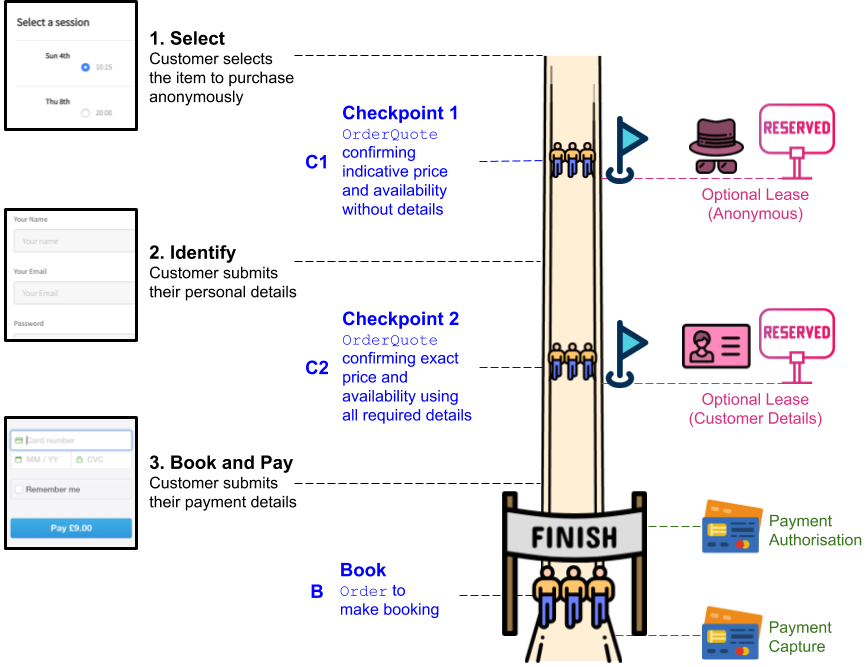
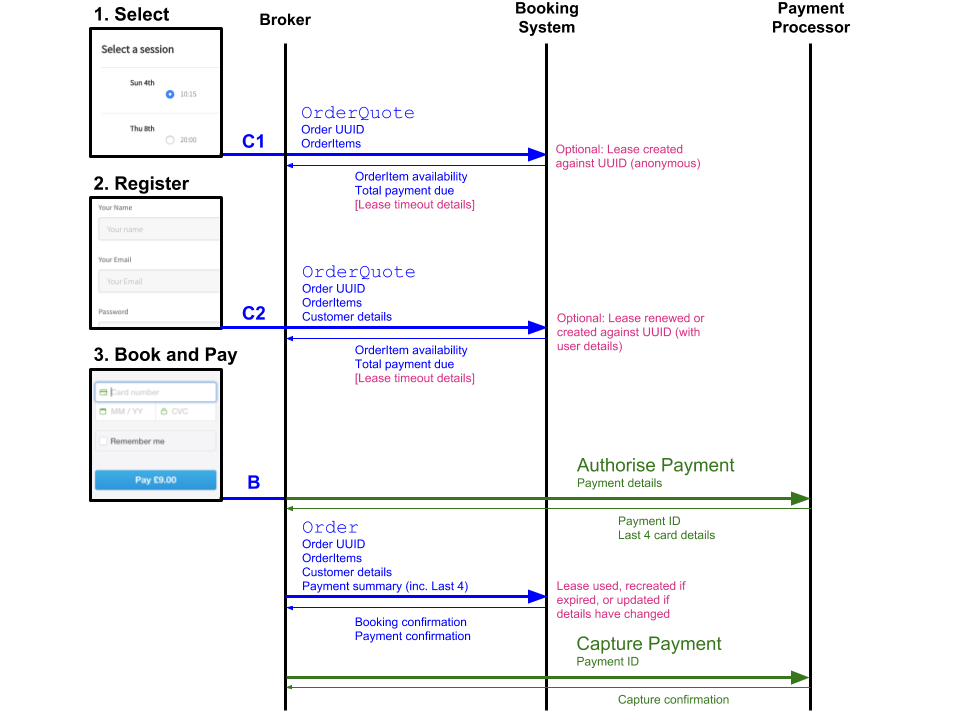
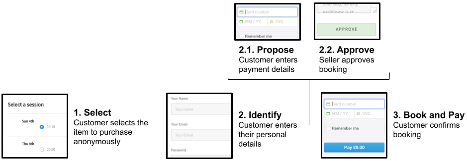
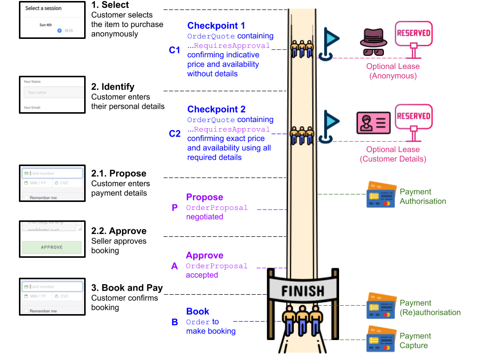
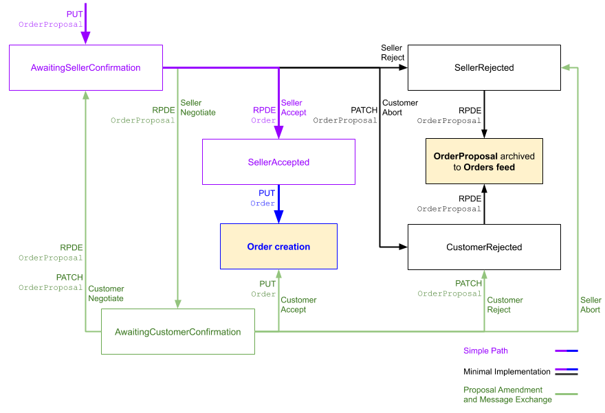
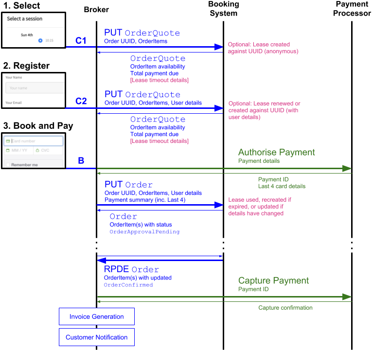
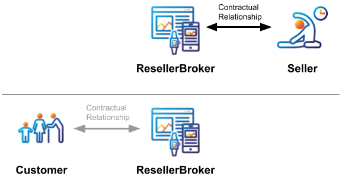
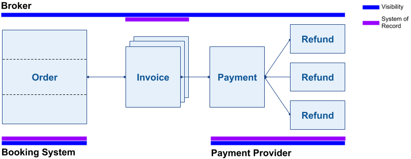
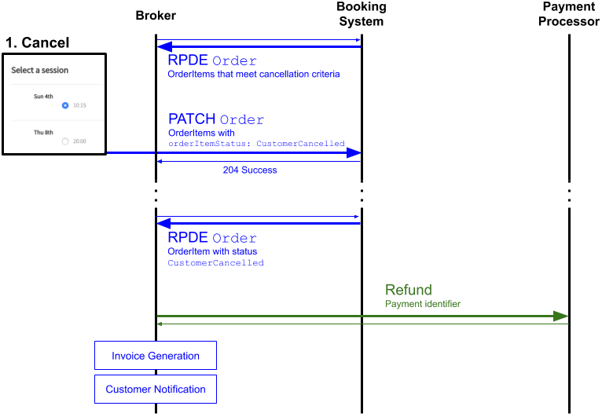
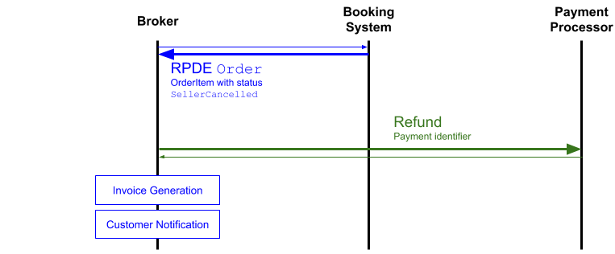

This document specifies an HTTP API for placing bookings to participate in
physical activities, either by attending events or through the use of leisure
or sports facilities.
Contributions to this document are not only welcomed but are actively solicited
and should be made via
[GitHub Issues](https://github.com/openactive/open-booking-api/issues) and
pull requests. The source code is available
on [GitHub](https://github.com/openactive/open-booking-api).
This document represents a published Candidate Release, including minor non-breaking clarifications that build on the version released at [https://www.openactive.io/open-booking-api](https://www.openactive.io/open-booking-api). This Candidate Release is published for the purposes of creating accompanying tooling and gathering implementation experience, and will be updated with further clarifications and minor technical improvements based on implementation feedback. We encourage developers to implement this API and share their experience.
# Introduction
The document is an output of the [OpenActive W3C Community Group](https://www.w3.org/community/openactive/). As part of the [OpenActive](https://www.openactive.io) initiative, the community group is developing standards that will promote the publication and use of [open opportunity data](https://www.openactive.io/modelling-opportunity-data/#categories-of-physical-activity-data) in helping people to become more physically active.
The Community Group have already published specifications that define standard data models ([[Modelling-Opportunity-Data]]) and support the publication and harvesting of data in standard formats ([[RPDE]]). This existing work helps increase the discovery of opportunities for people to get more active.
An Opportunity (e.g. "Yoga Tuesday 14th March at 7pm") in the context of this specification is a specific instance of an [`Event`](https://www.openactive.io/modelling-opportunity-data/#describing-events-code-schema-event-code-) (or subclass of `Event`) that a Customer can attend to participate in physical activity: a `ScheduledSession` within a `SessionSeries`, a `Slot` within a `FacilityUse`, a `HeadlineEvent` or a `CourseInstance` (or an `Event` within a `HeadlineEvent` or `CourseInstance`). Each Opportunity has associated [`Offer`](https://www.openactive.io/modelling-opportunity-data/#describing-offers-code-schema-offer-code-)s (e.g. "Junior (8-18) £9"), which may be free, and describe the commercial means of accessing the Opportunity.
Opportunity Data in the context of this specification is openly published data pertaining to Opportunities,
accessible via [[RPDE]] feed(s).
This specification builds on the previous work of the Community Group by defining an HTTP API that can be implemented by Booking Systems that are publishing Opportunity Data. By
allowing third-party applications ("Brokers") to place bookings in their systems, it becomes possible for more people to participate in events or make use of leisure and sporting facilities.
The specification defines the flow of HTTP requests and responses between the
Booking System (server) and the Broker (client). This includes
definitions of the overall application flow, detailed request and response
formats and the potential error conditions that applications may encounter. A high-level summary of these and their relationship to each other is provided in the [Booking Flow overview](#booking-flow-overview), below.
## Scope and requirements
The focus of the initial versions of this specification will be on the simplest use cases that support guest checkout bookings via a Broker.
The core functionality includes:
* __Guest checkout__ – making a booking on behalf of a Customer who is assumed to be unknown to the Booking System and Seller, and who does not expect a persistent account to be created for them with the Seller.
* __Pricing and availability__ – checking the price and current availabilty of an event or for the use of a facility.
* __Booking__ – recording bookings in the Booking System.
* __Tax__ – tax calculation by the Booking System exposed to the Broker.
* __Multiple order items__ - bookings for multiple events and for groups of attendees.
* __Child booking__ - booking on behalf of a child.
* __Dynamic pricing__ – allowing the Broker to vary pricing, where agreed with the Seller.
* __Cancellation__ – Customer and Seller initiated cancellation .
* __Access control__ - text, images and barcodes that can be used by the Customer to access the activity.
Additional optional functionality includes:
* __Leasing__ – temporarily reserving spaces for a Customer to attend an event or
make use of a facility, whilst they are placing a booking.
* __Booking approval__ – for Booking Systems that support or require approval for bookings, including proposal negotiation and message exchange.
* __Attendee Details capture__ – optional capturing of attendee details.
* __Additional Details capture__ – optional capturing of additional details per-attendee for a booking.
### Out of Scope in this version
A number of additional requirements that relate to the booking of events and facilities are currently out of scope:
* Creating and managing accounts for Customers
* More complex pricing options, e.g. membership-based pricing
* Waiting lists for events
* Collecting marketing preferences from the Customer
* Mandatory business-to-business tax calculation
* Cancellation fees
* "Subscriptions" to allow a Customer to participate ad-hoc in a Seller's activity, with such participation recorded for later reconciliation
* Refunds/cancellations after the Opportunity has occurred
* Back-office systems between Broker and Booking System, such as for payment reconciliation
* Fine-grained control of Opportunitybookability in the Booking System
* The ability to restrict specific API functionality for a particular Broker
It is possible that future versions of this specification may include support
for these or other features. Revisions will be driven by the needs of the
community, please raise feature requests via [GitHub](https://github.com/openactive/open-booking-api).
### Out of Scope by design
By design this specification will not define some types of functionality.
These have been declared as permanently out of scope because they are either
adequately covered by existing specifications, or will be covered by future
work of the OpenActive W3C Community Group.
The functionality that is currently defined as out of scope includes:
* __API authentication and security__ – while the specification recommends some best practices relating to authentication and security it does not mandate a specific means of securing an API. Implementers are free to choose the system that offers the best security for their platform and users.
* __Payment processing__ – the design assumes that all payment handling will be coordinated by the Broker, in a separate payment flow. Brokers are able to use the payment and reconciliation mechanisms that provide the best options for their Sellers and Customers.
* __API business models__ – the design is agnostic to any business models that might govern the use or provision of the API, e.g. revenue-sharing or transaction processing fees.
* __Opportunity discovery__ – finding, filtering and searching for Opportunity Data. This specification assumes that the client and server applications have already shared data about the relevant Opportunities, e.g. via an [[RPDE]] feed containing [[Modelling-Opportunity-Data]] data.
* __API endpoint discovery__ – the means for a Broker to discover the API endpoints included in this specification are included in the [[Dataset-API-Discovery]] specification.
## Specification dependencies
Version 1.0 of the Open Booking specification depends on the following:
- [[RPDE]] Version 1.0
- [[Modelling-Opportunity-Data]] Version 2.x (where x >= 0)
Note that the dependency on the [[Modelling-Opportunity-Data]] specification is only constrained to the major version release, and that the flexibility provided by supporting minor versions (which do not include breaking changes) enables implementors to take advantage of additional features as the specification evolves.
## Audience
The document is primarily intended for the following audiences:
- Software developers who want to implement the API, e.g. as part of a Booking System
- Software developers building client libraries or tools
- Software developers writing applications that will use the API ("Brokers")
The following sections introduce terminology, concepts and requirements that
underpin the design of the API. This content might also be useful for a wider
audience, e.g. business analysts or product managers looking for a high-level
overview of the API functionality.
This specification makes use of the compact IRI Syntax; please refer to the
[Compact IRIs](https://www.w3.org/TR/json-ld/#compact-iris) section from [[JSON-LD]].
# Typographical Conventions
The following typographic conventions are used in this specification:
markup
Markup (elements, attributes, properties), machine processable
values (string, characters, media types), property name, or a
file name is in a monospace font.
A document reference (normative or informative) is enclosed in
square brackets and links to the references section.
Notes are in light green boxes with a green left border and with a "Note"
header in green. Notes are normative or informative depending on the whether
they are in a normative or informative section, respectively.
Examples are in light khaki boxes, with khaki left border, and with a
numbered "Example" header in khaki. Examples are always informative.
The content of the example is in monospace font and may be syntax colored.
# Key Actors
Of all the organisations and systems involved in a transaction, the API defined
by this specification is scoped tightly to only specify interactions between the Broker and
Booking System, with high level prompts for interactions with Customers, Sellers and Payment Providers.
Illustration of actors and systems involved in a transaction, and the focus
of this specification being between Broker and Booking System.
Customer
The user who places a booking using an application provided by a Broker. The Customer is not necessarily the attendee, e.g. a parent may book on behalf of their child.
Broker
The organisation, independent of the Seller, that provides an application allowing Customers to make bookings. For simplicity the API client is referred to as the Broker throughout this specification, however other API clients are permissible, and Booking Partner is the collective term for different types of clients of this API.
Booking System
The organisation providing an application that maintains bookable inventory on behalf of the Seller. The platform or service that provides a server-side implementation of this API.
Seller
The organisation providing access to events or facilities via a Booking System e.g. a leisure provider running yoga classes.
Payment Provider
The notional service providing payment processing between the Customer, Broker and Seller. Although this specification refers to the Payment Provider as a single notional service, it may in reality be composed of multiple connected services providing the same functionality to allow for the widest variety of business models.
# Booking Flows
This specification includes two main booking flows: a [Simple Booking Flow](#simple-booking-flow), and a [Booking Flow with Approval](#booking-flow-with-approval) that builds on the [Simple Booking Flow](#simple-booking-flow). The two flows are largely identical, with the addition of a (possibly iterative) approval step in the [Booking Flow with Approval](#booking-flow-with-approval).
## Booking flow overview
Described in the broadest possible terms, the Open Booking API defined by this specification supplies the technical means whereby a Broker can book a Customer into an Opportunity for a physical activity, by means of an `Offer` provided by a Seller. Typically, although not always, a Payment will have to be made for this `Order`.
While this process is intuitively clear, some of its implications may be less so, and a number of common use-cases introduce a degree of additional complexity into the flow. For instance, a Customer will typically want to have an idea of how much a given `Offer` will cost before committing to attending an Opportunity. This means that before an `Order` can be created, an `OrderQuote` (a subclass of `Order`) needs to be provided. In addition, many Sellers will need to review their `Order`s before deciding to approve them because, for instance, they need to allocate shared resources such as caretakers to a number of Customers. This is the motivation for the [Booking Flow with Approval](#booking-flow-with-approval) sequence, and introduces to the flow the concept of `OrderProposal`s - another subclass of `Order`, which allows (re)modification by both parties and that requires explicit consent from both Customer and Seller before a new `Order` is created.
The process of creating an `Order` online takes time, and for this reason some Sellers and Brokers may optionally offer their users a Lease - a provisional reservation of an Opportunity that prevents it from being sold while the Customer is in the process of booking it.
Typically Sellers keep track of bookings by means of an automated Booking System. This raises the problem of ensuring consistency in the state of information between the Booking System and the Broker. This difficulty is bridged by the concept of `Order` feeds, which publish all changes made to an `Order` by the Booking System after its initial successful response to the client's request to create it, and which is intended for consumption only by the Broker.
The process of creating an `Order` will normally involve the processing of a Payment. While Payments are normally fixed, some approaches to pricing also allow for the possibility of a `DynamicPayment`, whereby the price may fluctuate based on external conditions. In addition, differences in approaches to taxation - whether because of regional variation, or because of the legal and commercial status of the Broker - result in a need for some nuances in the modelling of `TaxChargeSpecification`s.
Additionally, transactions between Customers, Brokers, and Sellers may be subject to various legal and regulatory `Terms`, such as a `PrivacyPolicy` and `TermsOfUse`.
## Booking flow modularity
This specification is designed to provide a minimal core [Simple Booking Flow](#simple-booking-flow), which should be straightforward to implement.
This specification also provides optional features, which allows the minimal core implementation to be augmented depending on the Booking System's requirements:
- [Leasing](#leasing) (`Lease`)
- [Attendee Details capture](#attendee-details-capture) (`https://openactive.io/OpenBookingAttendeeDetails`)
- [Additional Details capture](#additional-details-capture) (`https://openactive.io/OpenBookingIntakeForm`)
- [Minimal Proposal Implementation](#minimal-proposal-implementation) (`https://openactive.io/OpenBookingApproval`)
- [Proposal Amendment](#proposal-amendment) (`https://openactive.io/OpenBookingNegotiation`)
- [Message Exchange](#message-exchange) (`https://openactive.io/OpenBookingMessageExchange`)
## Booking pre-conditions
In order to enter either of the booking flows described in this specification, the following pre-conditions must be met:
- The Broker MUST obtain Opportunity Data that includes descriptions of Opportunities, by frequently harvesting data via Opportunity Data [[RPDE]] open feeds provided by the Booking System.
- The Broker MUST present an up-to-date view of availability data for the Customer to select items to book, as this data may change over time.
- The Booking System MUST ensure that the `remainingAttendeeCapacity` and `remainingUses` properties in the Opportunity Data are up-to-date.
- The Customer MUST have selected at least one bookable pair of an Opportunity ("Yoga Tuesday 14th 7pm") with an associated `Offer` ("Junior (8-18) £9"). These pairs populate the `orderedItem` and `acceptedOffer` properties within the submitted `OrderItem`s, respectively.
- It is not possible for Opportunities from different Sellers or with different Brokers or on behalf of different Customers to be combined in the same `Order`.
- The Broker MUST generate an Order UUID, which is a unique UUID string representation strictly as defined in [[RFC4122]].
## Simple Booking Flow
### Customer Journey
The booking journey of a Customer is generalised into the following logical steps:
Illustration of a typical Customer journey.
1. **Select**: Customer selects at least one Opportunity (e.g. `ScheduledSession` or `Slot`) and an associated `Offer` ("Junior (8-18) £9")
2. **Identify**: Customer submits personal details and other requested details
3. **Book and Pay**: Customer submits payment details
Note that some or all steps may be skipped, or may not be presented to the Customer, e.g. if their registration or payment details are already known, or they are using a voice interface. These steps are not indicative of the user experience, and simply provide a common language around the flow.
### High-level API flow

Illustration of high level booking flow.
- The Broker generates an Order UUID, which is used to uniquely identify the `OrderQuote` / `Order` throughout the process.
- After "**1. Select**" the Broker calls the Booking System to confirm an indicative price and the availability of the selected items using an `OrderQuote`, and retrieve a total order price. Any details that the Customer needs to supply to complete the booking are also specified. This is checkpoint C1 on the diagram above.
- After "**2. Identify**" the Broker calls the Booking System to reconfirm the price and availability of the selected items using an `OrderQuote`, using all personal details required, and retrieve a total order price. Explicit consent for any terms and conditions is also captured at this stage if required. This is checkpoint C2 on the diagram above.
- After "**3. Book and Pay**", the Broker first _pre-authorizes_ the payment for the total order price (if required by the Payment Provider), then confirms the booking with the Booking System using an `Order` (B on the diagram above), and finally _captures_ the payment. The Broker then generates invoices, and sends the Customer notifications.
- The Booking System adds the `Order` to an Orders feed specific to the Broker, which the Broker reads to update its internal state, including those updates resulting from cancellations.
### Leasing
Customers may simultaneously attempt to book the same Opportunity (e.g. space in an event or `Slot` of a facility), and hence contend with one another for a limited number of Opportunities. In order to ensure that items cannot be "stolen" from a Customer's "shopping basket" by another Customer, some Booking Systems use the concept of a Lease, a temporary reservation that provides a window during which a Customer can complete their customer journey and improves the user experience overall.
The design of this API supports the use of time-bound Leases. Using Leases is RECOMMENDED, however they are not required, in order to ensure a low barrier of entry for implementors of the specification.
Individually at C1 and C2, the Booking System can opt to create (or extend) a Lease for the Broker. Whether they opt to do so may depend on the Booking System's capacity to support Leases, or on the Seller's configuration of the Booking System.
At C1 an Anonymous Lease MAY be created i.e. a Lease for a Customer that has not yet provided any personal details.
At C2 a Named Lease MAY be created i.e. a Lease for a Customer who has identified themselves via personal details and other additional details. Any existing Anonymous Lease becomes a Named Lease when the customer's personal details are provided (even if the Booking System does not store them at this stage).
If a Lease is created at C1 and/or C2 it is used during B. However, if no Lease is created, or if it had expires prior to the transaction being completed, the booking completes anyway provided sufficient inventory is available.
It is RECOMMENDED that if the Booking System supports leasing, it also guarantees the price of each leased item for the duration of the Lease, so that the Customer is guaranteed to pay the price they have seen during C2.
The specification is designed to allow Brokers to be agnostic to Leases: should a Booking System be upgraded to support these, it can do so without affecting the Broker's implementation.
By design, then, the use of Leases is largely transparent to the Broker. However, the Booking System MUST provide information on the Lease to help improve the user experience of the customer journey as follows: when a Lease is created, a `Lease` object MUST be returned in the `OrderQuote`.
The `leaseExpires` MAY be used to inform the Customer of the time they have remaining.
### High-level type flow
Illustration of types used during the API flow.
The `OrderQuote` is an ephemeral draft of the `Order` while it is being constructed by the Customer.
- C1 - `OrderQuote` without enough personal details or additional details to be accepted as an `Order`.
- C2 - `OrderQuote` with complete and validated detail, enough to be created successfully as an `Order`.
- B - `Order` exists in an instantly successful state in the Booking System, though it transitions through `orderCreationStatus` states in the Broker.
### Order statuses
To simplify the implementation for the Booking System, the creation of an `Order` is considered atomic to the Booking System (it succeeds or fails at once in B), and by contrast is considered to consist of steps to the Broker.
#### Order statuses in the Booking System
In this version of the specification the `Order` within the Booking System MUST NOT have a status, it exists atomically in a successfully created state. Although `OrderItem`s may be cancelled by either the Customer or the Seller, the `Order` itself within the Booking System is simply a container. The `orderStatus` property of the `Order` MUST NOT be used and is reserved for future evolution of the specification.
The `orderCreationStatus` is maintained by the Broker only during this flow, and MUST NOT be sent to the Booking System.
#### Order statuses in the Broker
Throughout "Book and Pay" section of this flow the Broker maintains the `orderCreationStatus` property in its copy of the `Order`, which is not sent to the Booking System. This allows the Broker to consistently rollback in the case of failure.
The `orderCreationStatus` statuses are defined as follows:
1. https://openactive.io/OrderCreationPaymentAuthorized - after successful Payment Authorisation
2. https://openactive.io/OrderCreationPaymentDue - after successful B
3. https://openactive.io/OrderCreationPaymentCaptured - after successful Payment Capture
4. https://openactive.io/OrderCreationComplete - after successful Invoice Generation and Customer Notification
An `Order` MUST NOT be communicated externally by the Broker and other operations such as cancellation MUST NOT be possible until it has reached the `orderCreationStatus` of `https://openactive.io/OrderCreationComplete`, after which the `orderCreationStatus` can be ignored.
### Step-by-step process description

Sequence diagram showing API interactions
i) "**1. Select**" - Customer browses Broker site anonymously and adds something to basket
- Broker MUST have determined at least one Open Booking bookableOpportunity each with an associated applicable `Offer` from the Customer's browsing, using the most up-to-date Opportunity Data.
- Broker generates an Order UUID.
- If any catastrophic failure occurs during the booking flow (any error with status code 500, or when the request consistently returns status code 503 after a number of retries) the Order UUID MUST be regenerated to allow for a clean retry of the booking. The Order UUID MUST NOT be regenerated for expected errors (status code 4xx).
ii) C1 - Broker call with `OrderQuote` including the Order UUID, without a `customer` object, to check availability and that the combination of items requested can be purchased, Booking System responds with an `OrderQuote` including any `error`s against each `OrderItem`.
- Booking System creates Anonymous Lease for that Order UUID if it is supported, otherwise it provides a simple availability and `totalPaymentDue` confirmation. An `OrderQuote` response with HTTP Status 200 will be returned if the all requested items are available. If a Lease has been created, then the `OrderQuote` in the response MUST include a `lease` property containing a valid `Lease` object.
- `OrderQuote` MUST include `totalPaymentDue`, which allows the Broker to update any UI with the total.
- `OrderQuote` MUST include a list of `OrderItem`s which contain their respective Opportunity objects, including enough detail to allow the Broker to communicate key information about the Opportunity to the Customer (rather than relying on the Broker having the most up-to-date Opportunity data from the open feeds at the point of purchase).
- The Booking System MUST ensure that the data returned to the Broker in the `remainingAttendeeCapacity` and `remainingUses` properties are up-to-date, including places already booked and those currently reserved by any Leases from competing `OrderQuote`s.
- `OrderQuote` MUST specify any additional details required to complete the booking for the selected `OrderItem`s via an `orderItemIntakeForm`.
- If there are any issues with the `OrderItem`s requested in the `OrderQuote`, the Booking System MUST respond with a `409 Conflict` response, with `error` details provided against each offending `OrderItem`.
- The Booking System MUST reflect back all properties defined by this specification that are supplied by the Broker's request in its response, including `broker` and `brokerRole`, to acknowledge they have been recognised (even if they have not actually been stored by the Booking System). The Booking System MUST NOT reflect back extension properties outside of this specification unless it explicitly supports them.
- If a viable payment reconciliation route is available between the Broker and the Seller that requires more than just the `identifier` property of the `Payment` to be included in B, the `payment` property MUST be included at C1, as per [Payment reconciliation detail validation](#payment-reconciliation-detail-validation). This ensures that a viable payment reconciliation route is available before the Customer starts to enter their data.
- `OrderItem`s have no `orderItemStatus`.
iii) "**2. Identify**" - Customer submits personal details and any other additional details requested
- The Customer MUST have been informed that their personal information is being submitted to the Seller.
- The Customer MUST have been made aware of any relevant `termsOfService`, for example by displaying a link to them prominently, before submitting their personal details.
- If `requiresExplicitConsent` is `true` for any `termsOfService` then the Customer MUST only be allowed to proceed if they have explicitly acted to assent to such terms.
- `attendee` and `orderItemIntakeFormResponse` data is be captured at this stage if specified via `attendeeDetailsRequired` and `orderItemIntakeForm` in the C1 response, respectively.
- If `prepayment` of all selected `Offer`s is `https://openactive.io/Optional` where they are not `https://openactive.io/Unavailable` then the Customer MAY be given the option to prepay or simply reserve a space without payment. Providing optionality of payment to the Customer is at the Broker's discretion.
iv) C2 - Broker call with `OrderQuote` including the Order UUID, with a `customer` object, and any `orderItemIntakeFormResponse` required, Booking System responds with an `OrderQuote` including any `error`s against each `OrderItem`.
- Booking System creates Named Lease for that Order UUID if it is supported, otherwise it provides a simple availability and `totalPaymentDue` confirmation. Works exactly as C1, except validates `payment` details, `customer` details, any `attendee` details, and the `orderItemIntakeFormResponse`.
- Broker presents the contents of the `OrderQuote` to the `Customer` to ensure they have the most up-to-date price and availability before proceeding with the purchase.
- If there are any issues with the `OrderItem`s requested in the `OrderQuote`, the Booking System MUST respond with a `409 Conflict` response, with `error` details provided against each offending `OrderItem` - including if an `OrderItem` is no longer available, cannot be purchased in combination with another `OrderItem`, or does not contain a sufficient `orderItemIntakeFormResponse`.
- Any `error`s must be resolved by the Customer or Broker before proceeding, by amending the `OrderItem`s included in the `OrderQuote` and resubmitting until an `OrderQuote` is returned without `error`s.
- If a viable payment reconciliation route is available between the Broker and the Seller that requires more than just the `identifier` property of the `Payment` to be included in B, the `payment` property MUST be included at C2, as per [Payment reconciliation detail validation](#payment-reconciliation-detail-validation).
- `OrderItem`s have no `orderItemStatus`.
v) "**3. Book and Pay**" - Customer submits payment details and clicks Book
- The Customer MUST only be allowed to proceed if no `OrderItem`s in the `OrderQuote` contain any `error`s.
- If `totalPaymentDue` is `0` because all `OrderItem`s are free of charge, `prepayment` of all selected `Offer`s is either `https://openactive.io/Unavailable`, or `https://openactive.io/Optional` and the Customer has chosen not to pay, payment details MUST NOT be captured.
vi) Payment Authorisation - Broker pre-authorises `totalPaymentDue` from Payment Provider
- The `Order` `@id`, which includes the Order UUID, and will be generated by the Broker to make the PUT call at B (the `Order` `@id` is also the PUT endpoint URL), SHOULD be used as a reference in the Payment Provider, if possible.
- If payment details were not captured due to the `prepayment` value of the selected `Offer`s or `totalPaymentDue` equalling `0`, pre-authorisation MUST NOT be taken.
- The Broker MUST store the `Order` request with an `orderCreationStatus` of `https://openactive.io/OrderCreationPaymentAuthorized` at this point, even if pre-authorisation is not taken, in order to ensure that the Order UUID in the Orders feed is recognised without a race condition. Such a condition might arise in the (admittedly unlikely) event of, e.g., an `Order` that is created at B and then immediately cancelled by the Booking System, which could result in the Broker receiving an unrecognised `Order` in the Orders feed if it was retrieved before the call to B returned.
vii) B - Broker call with an `Order` including the Order UUID, with a `customer` object, and any `orderItemIntakeFormResponse` required, and `totalPaymentDue` including the total amount pre-authed; the Booking System responds with an `Order`.
- If payment details were not captured due to the `prepayment` value of the selected `Offer`s, or if `totalPaymentDue` is `0` due to all `OrderItem`s being free of charge, the `payment` property MUST NOT be included in the `Order` request or response, and the Booking System MUST proceed to create a payment-free `Order`. If the `payment` property is omitted where `totalPaymentDue` is not `0`, and the `prepayment` value of any `Offer` with `price` that is not `0` is `https://openactive.io/Required` or unspecified, then a `MissingPaymentDetailsError` MUST be returned. If the `payment` property does not include `identifier`, then a `IncompletePaymentDetailsError` MUST be returned. If the `payment` details supplied (e.g. `accountId`) are not considered valid for reconciliation by the Booking System then an `InvalidPaymentDetailsError` MUST be returned.
- The `identifier` of the `Payment` is taken from the payment pre-authorization, which must be able to be matched against any payment reports produced by the Payment Provider for the purposes of audit and/or reconciliation.
- If the `totalPaymentDue` included in the `Order` object is different to the current `totalPaymentDue` (which might have changed since C2, e.g. if the headline price is changed in the Booking System between these two steps), B returns an `TotalPaymentDueMismatchError` with associated status code, but the Lease is sustained so that the Customer can be prompted whether they want to continue with the new amount.
- If the Lease has expired, or if Leases are not supported, then the Booking System attempts to make the booking anyway. If there are insufficient spaces available for `OrderItem`s the B returns an `OpportunityHasInsufficientCapacityError` with associated status code.
- If the booking succeeds only for some `OrderItem`s, the whole transaction to create the `Order` within the Booking System is rolled back and B returns an `OrderCreationFailedError` with associated status code.
- If there's a network failure, e.g. no response from server, then the Broker can resubmit with same Order UUID. As the call is idempotent, the Booking System will need to track the Order UUID supplied by Broker against any successfully created `Order`s, to ensure that it can return the same `Order` for subsequent requests. The Broker MUST NOT reuse UUIDs across multiple `Order`s.
- If the call is successful (returns a 200 response), the booking is considered as complete and paid by the Booking System at this point.
- The Booking System MUST reflect back all properties defined by this specification that are supplied by the Broker's request in the `Order` returned from this call, including `broker` and `brokerRole`, to acknowledge they have been recognised (even if they have not actually been stored by the Booking System). The Booking System MUST NOT reflect back extension properties outside of this specification unless it explicitly supports them.
- The `Order` returned from this call MUST be stored by the Broker, to be subsequently updated by the Orders feed. The Orders feed contains only partial-updates of the `Order` stored by the Broker, and the Broker is the only actor guaranteed to maintain a complete view of the `Order`. The Booking System MAY store the full `Order` if desired.
- It is the responsibility of the Broker to store any additional state it requires that is not included in the `Order` returned from this call, and RECOMMENDED that such state is stored alongside the Broker's persisted `Order`.
- The Broker MUST store the `Order` response in with an `orderCreationStatus` of `https://openactive.io/OrderCreationPaymentDue` at this point (or `https://openactive.io/OrderCreationPaymentCaptured` if no payment is due).
- This call is idempotent, and hence if the Order UUID used for an `Order` already represents a completed `Order` with the same set of `OrderItem`s for the same `customer` as those specified, the success response is returned as normal. If any differences exist in the `Order`s, an Order UUID clash is assumed, a 500 response of with `OrderAlreadyExistsError` is returned by the Booking System, and a new Order UUID must be generated by the Broker to retry the call.
- As this call is idempotent, it can be safely retried in the case of an temporary unexpected error (any error that returns status code 503) or rate limiting (any error that returns status code 429).
- When the request still returns status code 503 after a number of retries the Order UUID MUST be regenerated to allow for a clean retry of the booking. The Order UUID MUST NOT be regenerated for expected errors (status code 4xx).
- `OrderItem`s returned by the Booking System have an `orderItemStatus` of `https://openactive.io/OrderConfirmed`.
viii) Payment Capture - Broker captures `totalPaymentDue` from Payment Provider
- It is the Broker's responsibility to ensure that payment has been captured if required.
- If payment is required, the Broker MUST update its stored `Order` with an `orderCreationStatus` of `https://openactive.io/OrderCreationPaymentCaptured` after payment is successfully captured.
- If payment details were not captured due to the `prepayment` value of the selected `Offer`s or `totalPaymentDue` equalling `0`, payment MUST NOT be captured.
ix) Invoice Generation and Customer Notification - Upon successful Payment Capture (or completing B in the case of payment capture not being required), the Broker generates invoices, sends the Customer notifications, and stores the `Order` in a success state based on the response from B.
- The Broker MUST update its stored `Order` in with an `orderCreationStatus` of `https://openactive.io/OrderDelivered` after invoices have been created and notifications successfully sent.
x) Refunds and Cancellation - The Broker subscribes to updates from the Booking System to process cancellations and refunds.
- A secure Orders feed of `Order`s MUST be provided by the Booking System, with the contents of the feed specific to the Authentication Credentials. This allows the Broker to maintain an updated state of all their bookings across a number of Booking Systems, even when changes are made outside of the Broker. This also allows the Broker to handle refunds for cancellations, and process notifications to Customers in a consistent way.
- The Booking System must ensure that the `Order`s in the Orders feed represent the current state of `OrderItem`s within the system, for the properties included in the feed. The Broker MUST use these `Order`s to process refunds and send update notifications to the Customer.
### Booking Flow Rollback
To ensure catastrophic errors are detected and resolved the Broker MUST periodically check its own store for any `Orders` that have not been updated in over a 2 minutes, and have an `orderCreationStatus` other than `https://openactive.io/OrderCreationComplete`.
Note that due to the ordering of the Booking Flow, no notifications will have been sent to the Customer, so no notifications regarding the rollback are required assuming it is performed promptly.
#### Booking halted at OrderCreationPaymentCaptured
If the `orderCreationStatus` is `https://openactive.io/OrderCreationPaymentCaptured`, Invoice Generation and Customer Notification should simply be retried, and the `orderCreationStatus` set to `https://openactive.io/OrderCreationComplete` on success with no further rollback steps taken.
#### Booking halted at OrderCreationPaymentDue
If an error occurs during Payment Capture, which is very unlikely but possible due to system failure, and detectable where the `orderCreationStatus` is `https://openactive.io/OrderCreationPaymentDue`, the Broker MUST either:
- Initiate manual capture via e.g. the Payment Provider's admin console. Note the pre-auth will typically last for 7 days, so manual capture is still possible after the event.
- Capture the payment from the Customer manually.
- Absorb the loss and make a new payment for the same amount with the same Order UUID in the Payment Provider (better for UX / customer service, if manual capture not possible).
- Acknowledge that payment cannot be successfully captured.
After payment has been successfully captured via one of the above methods, the `orderCreationStatus` MUST be set to `https://openactive.io/OrderCreationPaymentCaptured`, which will cause Invoice Generation and Customer Notification to be retried as per the previous section.
If the payment cannot be captured successfully:
- The Broker MUST issue a Order Deletion (DELETE) request for the `Order` to remove it from the Booking System.
- The `orderCreationStatus` MUST be set to `https://openactive.io/OrderCreationPaymentAuthorized`, to trigger the rollback step in the next section.
#### Booking halted at OrderCreationPaymentAuthorized
If the `orderCreationStatus` is `https://openactive.io/OrderCreationPaymentAuthorized`, the Broker MUST:
- Cancel the associated Payment Authorisation from the Payment Provider.
- Soft delete the contents of the `Order` from the Broker (deleting any personal data, while retaining data required for audit), retaining the Order UUID.
Note that the Order UUID is retained so that any related entries in the Orders Feed can be appropriately assigned and ignored.
### Contracts
A summary of the key conformance criteria for the Broker and Booking System is included here.
#### Broker contract with Booking System
- The Broker MUST call C1 (without Customer details)
- The Broker MUST call C2 (with Customer details), to retrieve the total order, providing all required details and resulting in no errors before calling B.
- The Broker MUST call B (with payment identifier if relevant), and MUST store the resulting `Order`.
- If B fails, the Broker MUST cancel the payment authorisation without any consequence to the Customer or Seller.
- The Broker MUST process all updates to the `Order` from the Orders feed, specifically monitoring the Orders Feed for cancellations.
- The Broker MUST generate an Order UUID, and use it consistently during the booking flow.
- The Broker MUST NOT reuse Order UUIDs across complete or incomplete `Order`s.
- The Broker MUST make the Customer aware of any relevant `termsOfService`, for example by displaying a link to them prominently, before they commit to the booking.
- If `requiresExplicitConsent` is `true` for any `termsOfService` then the Customer MUST only be allowed to proceed if they have explicitly acted to assent to such terms.
- The Broker MUST handle payments and reconciliation with the Seller and the Payment Provider.
- Calls to C1, C2, and B MUST include the `@id` of the `seller` to which requested `OrderItem`s pertain.
#### Booking System contract with the Broker
- The Booking System MUST respond to C1 (without Customer details) with an `OrderQuote` that includes an indicative total order price, or a relevant error. It must also include the specification of any additional details to captured from the Customer to be provided to C2.
- The Booking System MUST respond to C2 (with Customer details) with an `OrderQuote` that includes an exact total order price, or a relevant error. It must also produce a relevant error if the additional details specified are not sufficient.
- The Booking System MUST respond to B with a completed `Order`, or a relevant error. The whole booking MUST succeed or fails as one.
- Upon any cancellations or updates to the `Order` or any `OrderItem` within it, the Booking System MUST include the updated `Order` in the Orders feed.
- The Booking System MUST store the Order UUID as part of the `Order` (and `OrderQuote` if leasing is enabled).
- The Booking System MUST refuse attempts to create new orders with a previously used Order UUID.
- The Booking System MUST check availability and confirm pricing during C1, C2, and B to ensure booking can complete.
- The Booking System MUST provide an authenticated Orders Feed specific to the Broker. The contents of this feed will consist of all Orders updated by the Booking System.
- The Booking System MUST provide [[RPDE]] open feeds of Opportunity Data, including pricing and availability.
- The Booking System MUST ensure that all endpoints defined in this specification are idempotent.
With the exception of leasing, C1 and C2 MUST NOT have any side effects.
## Booking Flow with Approval
The Booking System MAY optionally support review and approval of bookings by the Seller. As the approval processes is initiated by the Booking System, implementation of this section by the Booking System is only required if this flow is supported. Otherwise this section can be ignored.
### Customer Journey
The booking journey of a Customer is generalised into the following logical steps:

Illustration of a typical Customer journey, with an approval step.
The steps exactly mirror the [Simple Booking Flow](#simple-booking-flow), with two additions in the 'Identify' step:
1. **Select**: Customer selects at least one Opportunity (e.g. `ScheduledSession` or `Slot`) and an associated `Offer` ("Junior (8-18) £9")
2. **Identify**: Customer submits personal details and other requested details
1. **Propose**: Customer submits payment details, and submits a proposed booking
2. **Approve**: Seller approves the booking, after a period of time
3. **Book and Pay**: Customer confirms they are happy to proceed
Note that some or all steps may be skipped, or may not be presented to the Customer, e.g. if their registration or payment details are already known, or they are using a voice interface. These steps are not indicative of the user experience, and simply provide a common language around the flow.
### High-level API flow

Illustration of high level booking flow, including approval.
The flow exactly mirrors the [Simple Booking Flow](#simple-booking-flow), with two additions:
- The Broker generates an Order UUID, which is used to uniquely identify the `OrderQuote` / `OrderProposal` / `Order` throughout the process.
- After "**1. Select**" the Broker calls the Booking System to confirm an indicative price and availability of the selected items using an `OrderQuote`, and retrieve a total order price. Any details that the Customer needs to supply to complete the booking are also specified. This is checkpoint C1 on the diagram above.
- After "**2. Identify**" the Broker calls the Booking System to reconfirm the price and availability of the selected items using an `OrderQuote`, using all details required, and retrieve a total order price. Explicit consent for any terms and conditions is also captured at this stage if required. This is checkpoint C2 on the diagram above.
- After "**2.1. Propose**", the Broker first _pre-authorizes_ the payment for the total order price (if required by the Payment Provider), then submits the proposed booking to the Booking System using an `OrderProposal` (P on the diagram above), and sends the Customer a notification that the proposal is under consideration. The `OrderProposal` may be negotiated between the Customer and Seller via the Broker at this stage.
- After "**2.2. Approve**" the Seller approves the `OrderProposal` and the Broker is notified of this by the Booking System (**A** on the diagram above). The Broker can seek Customer permission to proceed, or simply complete the booking automatically, depending on the desired user experience.
- After "**3. Book and Pay**", if necessary the Broker _re-authorizes_ the payment for the total order price (if it has changed, and if required by the Payment Provider), then confirms the booking with Booking System using an `Order` (B on the diagram above), and finally _captures_ the payment. The Broker then generates invoices, and sends Customer notifications.
- The Booking System adds the `Order` to an Orders feed specific to the Broker, which the Broker reads to update its internal state, including those updates resulting from cancellations.
Note that the `OrderProposal` at stages 2.1 and 2.2 does not constitute a booking. The whole flow MUST be completed before the Customer is considered "booked" onto an Opportunity.
### Proposal Leasing
Leasing works as specified in the [Simple Booking Flow](#simple-booking-flow), and if a Lease was acquired at C1 or C2 it SHOULD be carried over to the `OrderProposal` and the Lease extended for a duration sufficient to cover the lifetime of the `OrderProposal`.
A Lease is NOT REQUIRED for this flow, as in some cases Sellers may prefer to manage contention for spaces manually via the approval process instead of leasing.
If an `OrderProposal` is in an `orderProposalStatus` other than `https://openactive.io/CustomerRejected` or `https://openactive.io/SellerRejected`, regardless of whether or not the Lease has expired, it MUST be possible for the Customer to still complete the booking if they attain approval. If at any point this is not the case, it is the responsibility of the Booking System to set the `orderProposalStatus` to `https://openactive.io/SellerRejected`, or if `openBookingFlowRequirement` of any `Offer` referenced in the `OrderProposal` includes `https://openactive.io/OpenBookingNegotiation`, to update the `OrderProposal` to remove or replace the offending `OrderItem`(s) with an appropriate `orderSellerNote`. For example, if an Opportunity becomes full or is cancelled and no substitute Opportunities are available, then all remaining outstanding `OrderProposal`s related to that Opportunity would need to be automatically rejected or updated.
If the Lease expires the Booking System could, for example, automatically reject the `OrderProposal` on behalf of the `Seller`, automatically renew the Lease, or allow the Seller to manually deal with the contention for spaces as part of the approval process and hence do nothing.
### High-level type flow
Illustration of types used during the API flow, with approval.
As specified in the [Simple Booking Flow](#simple-booking-flow), with one addition:
- **P/A** - `OrderProposal` exists in a number of states, as described in the next section, and contains enough detail to successfully create an `Order`.
### OrderProposal statuses

State transition diagram showing OrderProposal states
`OrderProposal` has an `orderProposalStatus` which is initially set by the Booking System to `https://openactive.io/AwaitingSellerConfirmation`.
The Broker MUST only proceed to B when `orderProposalStatus` is set to `https://openactive.io/SellerAccepted` in the Orders feed.
An `OrderProposal` MUST be approved or rejected atomically; partial approval is not supported in this version of the specification (though [Proposal Amendment](#proposal-amendment) is supported).
To reach the criteria to proceed to B, or rejection, `OrderProposal` MUST be transitioned through states as follows:
- The Booking System MUST transition the `OrderProposal` to a new `orderProposalStatus` by updating the Orders feed.
- The Broker MUST transition the `OrderProposal` to a new `orderProposalStatus` by submitting a PATCH to the `OrderProposal` using the OrderProposal Update endpoint.
The Booking System MUST generate a new OrderProposal Version UUID, which is a unique UUID string representation strictly as defined in [[RFC4122]], separate to the Order UUID, for the initial `OrderProposal`, and subsequently for each amendment made (if [Proposal Amendment](#proposal-amendment) is supported).
#### Minimal Proposal Implementation
In the **Minimal Proposal Implementation** the `OrderProposal` can either be accepted or rejected by the Seller, or aborted by the Customer.
If an `Offer` requires this **Minimal Proposal Implementation**, the Booking System MUST include the `openBookingFlowRequirement` of `https://openactive.io/OpenBookingApproval` in the `Offer`s within its open data. This allows Brokers that do not support approval to easily filter out such offers from their experience.
Note that when `Offer`s that require approval are mixed with `Offer`s that do not require approval in a single `OrderQuote`, the whole `OrderQuote` MUST always require approval. It is at the discretion of the Broker whether to issue two separate `OrderQuote`s (and hence complete two separate booking flows) that batch those `OrderItem`s that require approval separately to those that do not, or whether to instead combine them together into a single `OrderQuote` and hence complete a single [Booking Flow with Approval](#booking-flow-with-approval).
##### Proposal Approval
- If Seller approval is given, the Booking System MUST set `orderProposalStatus` to `https://openactive.io/SellerAccepted` in the Orders feed, which will give the Broker permission to proceed to B.
- For the [Minimal Proposal Implementation](#minimal-proposal-implementation), the Broker must check that the `orderProposalVersion` received in the Orders Feed matches the original `orderProposalVersion` returned at P. If this is the case the Broker may seek Customer confirmation to proceed, or may simply proceed with B automatically, depending on the desired user experience. If this is not the case, the scenario MUST be handled via the [Proposal Amendment](#proposal-amendment) process.
##### Proposal Rejection
- If the Seller rejects the proposal, the Booking System MUST set `orderProposalStatus` to `https://openactive.io/SellerRejected` in the Orders feed, optionally including an `orderSellerNote` containing any reason for rejection.
- If the Customer aborts the proposal, the Broker MUST PATCH the `OrderProposal` to set the `orderProposalStatus` to `https://openactive.io/CustomerRejected`, optionally including an `orderCustomerNote` containing any associated reason. The Booking System will then update this in the Orders feed,
Following any type of rejection, the Broker MUST immediately withdraw any payment authorisation.
#### Proposal Amendment
The Booking System MAY optionally support **Proposal Amendment**. If this is not supported by the Booking System, the simple Approval/Rejection workflow described in the [Minimal Proposal Implementation](#minimal-proposal-implementation) may be used without needing to consider this (as the amendments are initiated by the Booking System).
If an `Offer` may require **Proposal Amendment**, the Booking System MUST include the `openBookingFlowRequirement` of `https://openactive.io/OpenBookingNegotiation` in the `Offer`s within its open data. This allows Brokers that do not support such negotiation to easily filter out such offers from their experience.
**Proposal Amendment** allows the Seller to suggest amendments to the `OrderProposal` (which need to be accepted by the Customer) as follows:
- If the `orderProposalVersion` in the Orders feed has changed compared with the `orderProposalVersion` in the `OrderProposal` stored by the Broker, the Broker MUST notify the Customer that their booking requires confirmation before it can proceed. The Broker MUST detect and highlight any changes from their stored `OrderProposal` in the notification, based on the difference between the `OrderItem`s stored by the Broker and those in the feed.
- When the Customer confirms, the Broker MUST re-authorise the `totalPaymentDue`, if it has increased, with the Payment Provider, then proceed to B using the `orderProposalVersion` the Customer has agreed to.
- The Customer or Seller MAY also choose to abort at any point as per [Minimal Proposal Implementation](#minimal-proposal-implementation).
Note that this specification does not support `OrderProposal` amendment by the Customer, and that Customer requests for changes to an existing proposal may be done via messages communicated via [Message Exchange](#message-exchange).
#### Message Exchange
The Booking System and Broker MAY support a basic level of **Message Exchange** while the `OrderProposal` is in-flight.
If an `Offer` requires **Message Exchange**, the Booking System MUST include the `openBookingFlowRequirement` of `https://openactive.io/OpenBookingMessageExchange` in the `Offer`s within its open data. This allows Brokers that do not support such negotiation to easily filter out such offers from their experience.
**Message Exchange** is achieved using the two properties `orderSellerNote` and `orderCustomerNote`, and does not have any impact on the `orderProposalVersion`.
The Seller MAY send a message to the Customer by setting `orderSellerNote` in the `OrderProposal`, and updating the `OrderProposal` in the Orders feed. Any change detected in the `orderSellerNote` in the Orders feed MUST promptly trigger a notification from the Broker to the Customer, so that the value of `orderSellerNote` can be safely overwritten with another message. To ensure that messages are not lost in the RPDE feed, the Seller MAY send no more than one message every 5 minutes per `OrderProposal`.
The Customer MAY send a message to the Seller by the Broker making a PATCH call to the OrderProposal Update endpoint to set `orderCustomerNote` in the `OrderProposal`. Any such `orderCustomerNote` updates via PATCH calls MUST either trigger a notification from the Booking System to the Seller, or be stored in the Booking System for later reference by the Seller, so that the value of `orderCustomerNote` can be safely overwritten with another message.
Note that the `orderCustomerNote` property MUST NOT be available in the Orders feed, to remove unnecessary RPDE updates.
### Step-by-step process description

Sequence diagram showing API interactions with approval
For an `Order` that requires approval, the flow differs from the [Simple Booking Flow](#simple-booking-flow), and proceeds as follows:
i-iv) The steps **1. Select**; C1; **2. Identify**; and C2 of this flow are exactly the same as [Simple Booking Flow](#simple-booking-flow) steps i-iv, except that `OrderQuote` is returned at C1 and C2 with `orderRequiresApproval` set to `true` if any `OrderItem`s require approval. In this case, the next step after C2 MUST be to follow the [Booking Flow with Approval](#booking-flow-with-approval).
- The Booking System MUST include the `openBookingFlowRequirement` of `https://openactive.io/OpenBookingApproval` for any `Offer`s that require this flow. This allows Brokers that do not support approval to easily filter out such offers from their experience.
- For the avoidance of doubt, as in the [Simple Booking Flow](#simple-booking-flow):
- Additional data is supplied at C2 to satisfy the `orderItemIntakeForm` for all `OrderItems` in C1.
- The `totalPaymentDue` from C2 is used for initial Payment Authorisation.
v) "**2.1. Propose**" - Customer submits payment details, and submits an initial booking in the form of an `OrderQuote`.
- For the avoidance of doubt, as in the [Simple Booking Flow](#simple-booking-flow):
- The Customer MUST only be allowed to proceed if no `OrderItem`s in the `OrderQuote` contain any `error`s.
- If `totalPaymentDue` is `0` because all `OrderItem`s are free of charge, `prepayment` of all selected `Offer`s is either `https://openactive.io/Unavailable`, or `https://openactive.io/Optional` and the Customer has chosen not to pay, payment details MUST NOT be captured.
vi) Payment Authorisation - Broker pre-authorises `totalPaymentDue` from Payment Provider.
This proceeds almost exactly as in the [Simple Booking Flow](#simple-booking-flow), except that instead of an `Order`, an `OrderProposal` (subclassing `Order`) is created by the Broker.
- As in the [Simple Booking Flow](#simple-booking-flow), the `OrderProposal` `@id`, which includes the Order UUID and is generated by the Broker to make the PUT call at B (the `OrderProposal` `@id` is also the PUT endpoint URL), SHOULD be used as a reference in the Payment Provider, if possible.
- As in the [Simple Booking Flow](#simple-booking-flow), the Broker MUST store the `OrderProposal` at this point even if pre-authorisation is not taken, in order to prevent the possibility of a race condition. However, note that `orderCreationStatus` MUST NOT be set on the `OrderProposal`.
vii) P - The Broker makes a request containing its newly-created `OrderProposal`, including its Order UUID, a `customer` object, any `orderItemIntakeFormResponse` required, and `totalPaymentDue` including the total amount pre-authed. The Booking System responds in turn with an `OrderProposal` with `orderProposalStatus` set to `https://openactive.io/AwaitingSellerConfirmation`.
- The Broker MUST store this returned `OrderProposal`.
- The call MUST be atomic.
- The returned `OrderProposal` also MUST contain an `orderProposalVersion`, which is constructed from the `@id` of the `OrderProposal`, combined with an additional OrderProposal Version UUID.
- `OrderItem`s returned MUST have an `orderItemStatus` of `https://openactive.io/OrderProposed`.
- If the call is successful (returns a 200 response), the booking MUST NOT be considered as complete by the Booking System at this point, and instead MUST be considered in a 'proposed' state.
- The Broker MUST NOT store an `orderCreationStatus` against the `OrderProposal`.
- The `OrderProposal` MAY include an `orderCustomerNote` in order to allow the Customer to ask a question about this Opportunity, as the beginning of a [Message Exchange](#message-exchange), if the `openBookingFlowRequirement` of any `Offer` referenced in the `OrderProposal` includes `https://openactive.io/OpenBookingMessageExchange`.
- To match much of the behaviour of B in the [Simple Booking Flow](#simple-booking-flow), the following also apply:
- The `OrderProposal` from P MUST NOT be present in the Orders feed until it is updated at least once.
- `totalPaymentDue` MUST be submitted to P and MUST match the value calculated by the Booking System to ensure that the `totalPaymentDue` has not changed.
- If payment details were not captured due to the `prepayment` value of the selected `Offer`s, or if `totalPaymentDue` is `0` due to all `OrderItem`s being free of charge, the `payment` property MUST NOT be included in the `OrderProposal` request or response. If the `payment` property is omitted where `totalPaymentDue` is not `0`, and the `prepayment` value of any `Offer` is `https://openactive.io/Required` or unspecified, then an `MissingPaymentDetailsError` MUST be returned. If the `payment` property does not include `identifier`, then a `IncompletePaymentDetailsError` MUST be returned. If the `payment` details supplied (e.g. `accountId`) are not considered valid for reconciliation by the Booking System then an `InvalidPaymentDetailsError` MUST be returned.
- The `identifier` of the `Payment` is taken from the payment pre-authorization, which must be able to be matched against any payment reports produced by the Payment Provider for the purposes of audit and/or reconciliation.
- If the `totalPaymentDue` included in the `Order` object is different to the current `totalPaymentDue` (which might have changed since C2, e.g. if the headline price is changed in the Booking System between these two steps), P returns an `TotalPaymentDueMismatchError` with associated status code, but the Lease is sustained so that the Customer can be prompted whether they want to continue with the new amount.
- If the Lease has expired, or if Leases are not supported, then the Booking System attempts to create the `OrderProposal` anyway. If there are insufficient spaces available for `OrderItem`s the P returns an `OpportunityHasInsufficientCapacityError` with associated status code.
- If the booking succeeds only for some `OrderItem`s, the whole transaction to create the `OrderProposal` within the Booking System is rolled back and P returns an `OrderCreationFailedError` with associated status code.
- If there's a network failure, e.g. no response from server, then the Broker can resubmit with same Order UUID. As the call is idempotent, the Booking System will need to track the Order UUID supplied by Broker against any successfully created `OrderProposal`s, to ensure that it can return the same `OrderProposal` for subsequent requests. The Broker MUST NOT reuse UUIDs across multiple `OrderProposal`s.
- The Booking System MUST reflect back all properties defined by this specification that are supplied by the Broker's request in the `OrderProposal` returned from this call, including `broker` and `brokerRole`, to acknowledge they have been recognised (even if they have not actually been stored by the Booking System). The Booking System MUST NOT reflect back extension properties outside of this specification unless it explicitly supports them.
- The `OrderProposal` returned from this call MUST be stored by the Broker, to be subsequently updated by the Orders feed. The Orders feed contains only partial-updates of the `OrderProposal` stored by the Broker, and the Broker is the only actor guaranteed to maintain a complete view of the `OrderProposal`. The Booking System MAY store the full `OrderProposal` if desired.
- It is the responsibility of the Broker to store any additional state it requires that is not included in the `OrderProposal` returned from this call, and RECOMMENDED that such state is stored alongside the Broker's persisted `Order`.
- This call is idempotent, and hence if the Order UUID used for an `OrderProposal` already represents a completed `OrderProposal` with the same set of `OrderItem`s for the same `customer` as those specified, the success response is returned as normal. If any differences exist in the `OrderProposal`s, a Order UUID clash is assumed, a 500 response of with `OrderAlreadyExistsError` is returned by the Booking System, and a new Order UUID must be generated by the Broker to retry the call.
- As this call is idempotent, it can be safely retried in the case of an temporary unexpected error (any error that returns status code 503) or rate limiting (any error that returns status code 429).
- When the request still returns status code 503 after a number of retries the Order UUID MUST be regenerated to allow for a clean retry of the booking. The Order UUID MUST NOT be regenerated for expected errors (status code 4xx).
viii) "**2.2. Approve**" - Seller approves the booking after automated or manual review.
- The Booking System must ensure that the `OrderProposal`s in the Orders feed represent the current state of `OrderProposal` within the system. The Broker MUST use these `OrderProposal`s to process `orderProposalStatus` changes and send update notifications to the Customer, including any new values for `orderSellerNote`.
- Once approved, the Booking System puts the updated `OrderProposal` onto the Orders feed (**A**), with either an unchanged `orderProposalVersion` (see [Minimal Proposal Implementation](#minimal-proposal-implementation)) or a new `orderProposalVersion` (see [Proposal Amendment](#proposal-amendment)).
- If the `orderProposalVersion` in the Orders feed has changed compared with the `orderProposalVersion` in the `OrderProposal` stored by the Broker, the Broker MUST notify the Customer that their booking requires confirmation before it can proceed. The Broker MUST detect and highlight any changes from their stored `OrderProposal` in the notification, based on the difference between the `OrderItem`s stored by the Broker and those in the feed.
ix) "**3. Book and Pay**" - Customer confirms booking
- The Broker MUST only proceed when `orderProposalStatus` is set to `https://openactive.io/SellerAccepted` in the Orders feed, and the `orderProposalVersion` is set to a value the Customer has agreed to (see [Proposal Amendment](#proposal-amendment)).
- If `totalPaymentDue` is `0` because all `OrderItem`s are free of charge, `prepayment` of all selected `Offer`s is either `https://openactive.io/Unavailable`, or `https://openactive.io/Optional` and the Customer has chosen not to pay, payment details MUST NOT be captured.
x) Payment Re-authorisation - Broker re-authorises `totalPaymentDue` from Payment Provider as necessary
- The Broker MUST re-authorise the `totalPaymentDue`, if it has increased in the new `orderProposalVersion` that the Customer has agreed to (see [Proposal Amendment](#proposal-amendment)), or if the previous Payment Authorisation has expired.
- As with the [Simple Booking Flow](#simple-booking-flow), the Broker MUST store the `Order` request with an `orderCreationStatus` of `https://openactive.io/OrderCreationPaymentAuthorized` at this point, even if pre-authorisation is not taken, in order to ensure that the Order UUID in the Orders feed is recognised without a race condition.
xi) B - The Broker makes a minimal call with an `Order` consisting of only the `orderProposalVersion` and any additional `payment` data from the re-authorisation step if necessary; the Booking System responds with a full `Order` as per the [Simple Booking Flow](#simple-booking-flow).
- If the Lease has expired, or if Leases are not supported, then the Booking System attempts to make the booking anyway. If there are insufficient spaces available for `OrderItem`s then B returns an `OpportunityHasInsufficientCapacityError` with associated status code and the original `OrderProposal` MUST be rejected by the Seller as per [Proposal Leasing](#proposal-leasing). Note that this is unlikely to occur as in such cases the `OrderProposal` SHOULD have already been rejected when it could no longer be fulfilled.
- The Booking System MUST reflect back all properties defined by this specification that were supplied in the Broker's original `OrderProposal` request (with amendments if [Proposal Amendment](#proposal-amendment) has occurred), to acknowledge they have been recognised. The Booking System MUST NOT reflect back extension properties outside of this specification unless it explicitly supports them. The Booking System MUST NOT reflect back the `orderProposalVersion` in its response to B.
- All other behaviour is identical to the [Simple Booking Flow](#simple-booking-flow) step vii. The `OrderProposal` becomes an `Order` in the Orders feed, and the `orderProposalVersion` MUST NOT be included in the `Order`.
xii-xiv) The Payment Capture, Invoice Generation, Customer Notification, and Refunds and Cancellation steps of this flow are exactly the same as [Simple Booking Flow](#simple-booking-flow) steps viii-x.
[Booking Flow Rollback](#booking-flow-rollback) also applies to this flow exactly as in the [Simple Booking Flow](#simple-booking-flow).
### Contract
A summary of the key conformance criteria is included here. These apply for the [Booking Flow with Approval](#booking-flow-with-approval) _in addition to_ the contract specified in the [Simple Booking Flow](#simple-booking-flow).
#### Broker contract with Booking System
- The Broker MUST call P with Customer details as they would for B in the [Simple Booking Flow](#simple-booking-flow), and MUST store the resulting `OrderProposal`.
- The Broker MUST process updates to the `OrderProposal` from the Orders feed, including **A**.
- The Broker MAY negotiate on the `OrderProposal` using a OrderProposal Update call.
- Calls to P MUST include the `@id` of the `seller` to which requested `OrderItem`s pertain.
#### Booking System contract with the Broker
- The Booking System MUST respond to P with an `OrderProposal`, or a relevant error. The whole creation of the `OrderProposal` MUST succeed or fails as one.
- Upon approval or updates to the `OrderProposal` or any `OrderItem` within it, the Booking System MUST include the updated `OrderProposal` in the Orders feed, including **A**.
- The Booking System MAY negotiate on the `OrderProposal` using the Orders feed.
## Customer Details and Additional Details capture
### Customer Details capture
The specification includes provision to capture of the following details related to the Customer (the actor who is booking), with only the e-mail address being required.
- E-mail address (`email`)
- Forename (`givenName`)
- Surname (`familyName`)
- Telephone (`telephone`)
Note that these are _not_ the details of attendees, and that the Customer is not guaranteed to participate in the activity. This facilitates child booking as the Customer can easily book on behalf of a child, without supplying the child's own personal details.
### Attendee Details capture
If attendee details in scope of the `Person` type are captured, they MUST be captured via the `attendee` property of the `OrderItem` (and not using the `orderItemIntakeForm`). This allows attendee details to be stored and reused by the Broker.
Note that conformance with this specification requires that the Booking System MUST NOT _require_ attendee data to be submitted in all cases, and that configuration of which attendee details are required (if any) MUST be available to the Seller.
If an `Offer` requires attendee details capture, the Booking System MUST include the `openBookingFlowRequirement` of `https://openactive.io/OpenBookingAttendeeDetails` in the `Offer`s within its open data. This allows Brokers that do not support attendee details capture to easily filter out such offers from their experience.
If a required property within `Person` is not supplied by the Broker the Booking System MUST include an `IncompleteAttendeeDetailsError` against the offending `OrderItem` at C2 which includes an `instance` that references the `@id` of the missing or invalid `Property`.
The Broker MAY remember the attendee data previously submitted by the Customer, if consent is provided.
### Additional Details capture
This version of the specification does not provide comprehensive support for construction of a complex additional details capture form. However, it does facilitate the use of simple text fields, dropdowns and checkboxes to capture additional details. These can be used for both the [Simple Booking Flow](#simple-booking-flow) and the [Booking Flow with Approval](#booking-flow-with-approval).
If an `Offer` requires additional details capture, the Booking System MUST include the `openBookingFlowRequirement` of `https://openactive.io/OpenBookingIntakeForm` in the `Offer`s within its open data. This allows Brokers that do not support such additional details capture to easily filter out such offers from their experience.
Four types of form element are available, all of which sub-class `PropertyValueSpecification`:
- `ShortAnswerFormFieldSpecification`
- `ParagraphFormFieldSpecification`
- `DropdownFormFieldSpecification`
- `BooleanFormFieldSpecification`
#### Text fields
`ShortAnswerFormFieldSpecification` and `ParagraphFormFieldSpecification` are identical except that they represent a single-line text box and a multi-line text box, respectively.
{
"@type": "OrderItem",
...
"orderItemIntakeForm": [
{
"@type": "ShortAnswerFormSpecification",
"@id": "https://example.com/experience",
"name": "Level of experience",
"description": "Have you played before? Are you a complete beginner or seasoned pro?",
"valueRequired": true
}
]
}
{
"@type": "OrderItem",
...
"orderItemIntakeFormResponse": [
{
"@type": "PropertyValue",
"propertyID": "https://example.com/experience",
"value": "I've played twice before, but I'm a quick learner so I hope to keep up!"
}
]
}
#### Dropdown fields
`DropdownFormFieldSpecification` provides a list of options in a dropdown format.
`valueOption`s are provided as an array of simple strings containing display values, and are supplied back to the Booking System using these display values in the `orderItemIntakeFormResponse`.
{
"@type": "OrderItem",
...
"orderItemIntakeForm": [
{
"@type": "DropdownFormFieldSpecification",
"@id": "https://example.com/age",
"name": "Age",
"description": "Your age is useful for us to place you in the correct group on the day",
"valueOption": ["0-18", "18-30", "30+"],
"valueRequired": true
}
]
}
#### Checkbox fields
`BooleanFormFieldSpecification` accepts either a `true` or `false` response, and MUST NOT be specified as `valueRequired`.
{
"@type": "OrderItem",
...
"orderItemIntakeForm": [
{
"@type": "BooleanFormFieldSpecification",
"@id": "https://example.com/photoconsent",
"name": "Photo Consent",
"description": "Are you happy for us to include photos of you in our marketing materials?"
}
]
}
The `value` in the `PropertyValue` response MUST be either `true` or `false`.
#### Form validation and auto-fill
If a field with `valueRequired` is not supplied by the Broker, the Booking System MUST include an `IncompleteIntakeFormError` against the offending `OrderItem` at C2 which includes an `instance` that references the `@id` of the specific `PropertyValueSpecification`.
If the contents of a field supplied by the Broker are present but invalid, the Booking System MUST include an `InvalidIntakeFormError` against the offending `OrderItem` at C2 which includes both an `instance` that references the `@id` of the specific `PropertyValueSpecification`, and a human-readable `description` of the validation constraint to allow the Customer to correct it.
In this version of the specification, any required field value validation MUST be implemented by the Booking System via `InvalidIntakeFormError`, for example if integer values are required.
{
"@type": "OrderItem",
...
"error": [
{
"@type": "InvalidIntakeFormError",
"instance": "https://example.com/shoesize",
"description": "The provided shoe size is not a number"
}
]
}
The Broker MAY remember the values previously submitted by the Customer based on the `@id` of the `PropertyValueSpecification`, if consent for such storage is provided.
It is expected that future versions of the specification will support more complex field types.
# Broker Roles
A Broker is an actor that arranges transactions between a Seller and Customer, either directly or indirectly.
From a contractual and taxation perspective, there are two types of Broker: agents (`AgentBroker`), and resellers (`ResellerBroker`). In addition, situations in which the customer contracts directly with the seller without a third party are represented by the `brokerRole` value of `NoBroker`.
Note that this specification does not deal with contractual relationships, and simply provides a mechanism to record bookings.
## `ResellerBroker`
### Definition
A reseller is a company or individual that purchases goods or services with the intention of selling them rather than consuming or using them. This is usually done for profit (but could be resold at a loss).
### Contractual Relationships
In the context of OpenActive, a `ResellerBroker` contracts directly with the Seller as a business-to-business relationship to purchase access to the Opportunity. It then, at a later point in time (which may only be milliseconds later), separately forms a contractual relationship with the Customer, who purchases access to the Opportunity from the `ResellerBroker`.

Contractual relationships in ResellerBroker mode
### Taxation
The `ResellerBroker`'s purchase from the Seller is business-to-business, which is subject to the appropriate taxation based on the `ResellerBroker` as the Customer.
The Customer's purchase from the `ResellerBroker` is business-to-consumer, which is subject to the appropriate taxation based on the `ResellerBroker` as the Seller.
Hence any tax exemption that the Customer may enjoy when purchasing directly from the Seller (e.g. in UK law, if the Seller is a [VAT exempt eligible body](https://www.gov.uk/guidance/sport-supplies-that-are-vat-exempt-notice-70145)) is not relevant here, as no direct contractual relationship is formed between Seller and Customer.
### Scope of Specification
This specification is designed to govern the interaction between the `ResellerBroker` and Seller. It does not include provision for the interaction between the `ResellerBroker` and Customer explicitly, though it may be repurposed by the Broker to perform this function by treating the Broker as a Booking System. This specification also does not include provision for the recording of the execution of the contractual relationship with any Payment Provider (e.g. for payment processing fees). Such relationships MUST be handled separately.
When the `brokerRole` is set to `ResellerBroker`, this indicates that the payee for accounting and tax purposes is the `broker` specified in the `Order`.
Note that the `customer` may still optionally be included in the Order, for example to help front-of-house staff identify the Customer.
### Conformance criteria
When the Broker generates the Invoice, it must be made payable to `Order.broker`, `Order.broker` MUST be provided and `Order.customer` is optional.
## `AgentBroker`
### Definition
An agent is authorized to act on behalf of another (the Seller, or "principal") to create legal relations with a third party (the Customer). Succinctly, it may be referred to as the equal relationship between a Seller and an agent whereby the principal, expressly or implicitly, authorizes the agent to work under his or her control and on his or her behalf. The agent is required to negotiate on behalf of the principal (Seller) and/or bring them and third parties (Customers) into contractual relationship.
### Contractual Relationships
There are three separate types of contractual relationship involved:
`AgentBroker` with Seller, known as the principal-agent relationship or "internal" relationship;
`AgentBroker` with Customer with whom they deal on their Seller's behalf ("external relationship"); and
Seller with Customer when arranged by an `AgentBroker`.
Contractual relationships in AgentBroker mode
### Taxation
While facilitated by the `AgentBroker`, the primary purchase is made by the Customer directly from the Seller, as would be the case if the Customer was to purchase from the Seller independently.
Hence any tax exemption that the Customer may enjoy when purchasing directly from the Seller (e.g. in UK law, if the Seller is an [VAT exempt eligible body](https://www.gov.uk/guidance/sport-supplies-that-are-vat-exempt-notice-70145)) is relevant here.
The Customer's relationship with `AgentBroker` is business-to-consumer. Hence any additional services (e.g. customer-facing booking fees) are subject to the appropriate taxation based on the `AgentBroker` as the `seller`.
The `AgentBroker`'s relationship with the Seller is business-to-business. Hence any additional services (e.g. booking commission) are subject to the appropriate taxation.
### Scope of Specification
This specification is designed to govern the recording of the execution of the contractual relationship between the Customer and Seller.
The scope of this specification does not include the contractual relationship between the `AgentBroker` and the Seller (e.g. for booking commission), between the `AgentBroker` and the Customer (e.g. for booking fees) or with any Payment Provider (e.g. for payment processing fees). Such relationships and the reconciliation of associated invoices MUST be handled separately.
When the `brokerRole` is set to `AgentBroker`, this indicates that the payee for accounting and tax purposes is the `customer` specified in the `Order`.
### Conformance criteria
When the Broker generates the Invoice, it must be made payable to `Order.customer`, `Order.broker` MUST be provided and `Order.customer` MUST be provided.
### Informed purchase
When using a `brokerRole` of `AgentBroker`, the Broker MUST make the Customer aware that they are purchasing directly from the Seller via the Broker, and not directly from the Broker.
## `NoBroker`
### Definition
This specification supports direct purchase by a Customer (for example in the context of the Seller's own website, or for businesses that purchase large volumes of FacilityUse slots to run leagues).
### Contractual Relationships
The contractual relationship is a simple one between the Seller and the Customer.
Contractual relationships in NoBroker mode
### Taxation
The purchase is made by the Customer directly from the Seller, as would be the case if the Customer was to purchase from the Seller outside of this specification.
Hence any tax exemption that the Customer may enjoy when purchasing directly from the Seller (e.g. in UK law, if the Seller is an VAT exempt eligible body) is relevant here.
### Scope of Specification
This specification is designed to govern the recording of the execution of the contractual relationship between the Customer and Seller.
The scope of this specification does not include the contractual relationship with any Payment Provider (e.g. for payment processing fees). Such relationships MUST be handled separately.
When the `brokerRole` is set to `NoBroker`, this indicates that the payee for accounting and tax purposes is the `customer` specified in the `Order`.
### Conformance criteria
When an Invoice is generated, it must be made payable to `Order.customer`, `Order.broker` MUST NOT be provided and `Order.customer` MUST be provided.
# Systems of Record
## Roles and responsibilities overview
For the purposes of this specification, the key components of a booking are: `Order`, Invoice, Payment and Refund.
Note that `OrderQuote` is a subclass of `Order` used during the `Order` creation process, and is not explicitly persisted.
The Broker has visibility of all components, while for simplicity of implementation the Booking System only has visibility of the `Order`, as shown below:

Roles and responsibilities
`Order`s are the basis of the exchange between the Booking System and the Broker, with `OrderQuote`s used as part of the `Order` creation process. This specification describes a detailed model and API to allow Brokers to manipulate `Order`s, and only high level functional requirements for the expected behaviour of Invoices, Payments, and Refunds.
| Component | Description | Owner | Audit |
|-------------|-----------------------------------------------------------------------------------------------------------------------------------------------------------------------------------------------------------------------------------------------------------------------------------------------------------------------------------------|--------------------|-----------|
| `Order` | A mutable object that encompasses the live state of the bookable `Event`s within the Booking System. An `Order` has a `orderItem`s, a `totalPaymentDue`, and all tax details, but is not itself a legal representation of a purchase from the Seller. | Booking System. | Mutable |
| Invoice | An immutable object that is a legal representation of the purchase, which MUST be rendered to the Customer as a legally permissible tax receipt, and exist as a tax point. A new Invoice MUST be generated for the `Order` to replace the previous Invoice each occasion that an `orderItem` within an `Order` is cancelled. | Broker | Immutable |
| Payment | A immutable object that represents the original payment to the Seller for the initial `Order`. Although modelling the Payment is outside the scope of this specification, it is recommended that one payment exists for each `Order`. | Payment Provider | Immutable |
| Refund | An immutable object that represents each refund made against the Payment, up to the Payment's total amount | Payment Provider | Immutable |
## Invoices and Tax receipts
Due to the variety of business models in use in OpenActive, the Booking System MUST NOT send receipts directly to the Customer for `AgentBroker` and `ResellerBroker` bookings.
For each successful booking operation (where C1, C2 and B together constitute a successful booking operation), the Broker MUST generate a new Invoice in the form of a tax receipt, on the basis of the Orders feed contents. To ensure that the Customer is provided with the correct tax receipt, if `totalPaymentTax` is provided in an `Order` in the Orders feed, the Broker MUST generate a new or updated Invoice and either (a) send a tax receipt representation of the Invoice to the Customer and/or (b) offer a means to allow the Customer to easily retrieve a full tax receipt representation of the specific version of the Invoice at any future date for any previous booking made. As it is ultimately the Seller's responsibility to send tax receipts, they need to be confident that the Broker is making tax information available to its Customers in an accurate and timely manner.
The tax receipt sent by the Broker MUST comply with any legal requirements of the jurisdiction of operation.
Note that if the specification is followed correctly, for all Broker modes where a Seller may need to supply a tax receipt manually for any reason, the Seller will have sufficient details of the Customer and of the transaction to generate the most recent tax receipt.
## Payments and Refunds
Due to the variety of business models available in the OpenActive ecosystem, conformance to this specification requires that the Payment Provider be distinct from the Booking System for which this API is defined. The Booking System MAY separately expose its own native payment functionality as if it were a Payment Provider, however its use MUST be OPTIONAL.
Although the details of Payments and Refunds are not in the scope of this specification, a single `Payment` object is included in the `Order` in the `payment` property to ensure payments are fully traceable in case of audit.
### Virtual payments
Note that this `Payment` is permitted to represent a virtual Payment consolidating a number of actual **Payments** to allow for a wide variety of payment methods. In the case where the Seller is paid monthly, the Payment may refer to a future invoice against which the Payment will eventually be paid.
### Basic `Payment`
A unique reference to this Payment MUST be included in the `Payment` `identifier` of the `Order` sent to the Booking System. This `Payment` `identifier` MUST be uniquely resolvable for audit purposes.
The `accountId` of the `Payment` SHOULD be provided to reference the specific account within the Payment Provider that is used for reconciliation purposes.
The `paymentProviderId` of the `Payment` SHOULD be provided to reference the specific Payment Provider that is used.
The `name` of the `Payment` SHOULD be used to provide information about the source of the payment that can be stored in the Booking System, to help the Seller in discussions with the Customer (e.g. "AcmeBroker Points" or "AcmeBroker via Credit Card").
#### Payment reconciliation detail validation
Payment reconciliation detail validation is required if any viable payment reconciliation route exists between the Broker and the Seller that necessitates more than just the `identifier` property of the `Payment` being included in B. For simplicity of implementation, such validation is required even if the `totalPaymentDue` is likely to be `0` or the `prepayment` value of the selected `Offer`s indicates no payment.
This ensures that a viable payment reconciliation route is available before the Customer starts to enter their data.
To achieve such validation, the `payment` property MUST be included at C1 and C2 by the Broker in the `OrderQuote` request, including all relevant properties of `Payment` except the `identifier`.
If the `payment` details supplied (e.g. `accountId`) are not considered valid for reconciliation by the Booking System then a `InvalidPaymentDetailsError` MUST be returned at C1 and C2.
For the Booking System, the `payment` property at C1 and C2 is always considered optional, as a payment reconciliation route may not exist.
At B and P the `payment` property MUST only be included if a payment is actually being processed. If payment details were not captured due to the `prepayment` value of the selected `Offer`, or if `totalPaymentDue` is `0` due to all `OrderItem`s being free of charge, the `payment` property MUST NOT be included in the `Order` at B. In all other cases `payment` property MUST be included in the `Order` at B.
For the simple case, if the Booking System does not implement properties other than the `identifier` property of the `Payment`, the `Payment` MUST simply be reflected back in the response to C1, C2, B and P with only the `identifier` property included, and no implementation of the `InvalidPaymentDetailsError` response is required.
### `DynamicPayment`
For fully dynamic pricing, where price is not known at the point of purchase, a `DynamicPayment` MUST be used. Example use cases include volume-based pricing, where the price of items are calculated at the end of the month depending on the total volume booked during that period.
To use the `DynamicPayment` the following preconditions must be met:
- The Broker and the Seller MUST have agreed an arrangement for dynamic pricing out-of-band, including which Opportunities and `Offer`s it applies to.
- Dynamic pricing cannot be mixed with standard pricing behaviour within the same `Order`, so all `OrderItem`s selected MUST be applicable for dynamic pricing based on such agreements.
- The Opportunities that are selected for booking MUST be bookable as in the standard flow.
To use `DynamicPayment` the booking flow MUST be completed as normal with the following additional requirements:
- The `OrderQuote`, `OrderProposal` and `Order` in request, response, and in the subsequent Orders feed MUST NOT include `totalPaymentDue` or `totalPaymentTax`, and `OrderItem`s MUST NOT include `acceptedOffer` or `unitTaxSpecification`.
- The booking flow MUST be completed _as if_ `prepayment` was set to `https://openactive.io/Unavailable` for the `acceptedOffer` for all `OrderItem`s.
- The `OrderQuote` / `OrderProposal` / `Order` submitted to C1, C2 and B (and P if using approval) MUST have a `payment` property that contains a `DynamicPayment`, which is consistent throughout the calls.
- If the `DynamicPayment` details supplied (e.g. `accountId`) are not considered either sufficient or valid for reconciliation by the Booking System then an `IncompletePaymentDetailsError` or `InvalidPaymentDetailsError` MUST be returned by all calls, respectively.
- The Booking System MUST NOT record any price against the `Order` or `OrderItem`s for reconciliation, as such reconciliation MUST occur completely out-of-band.
The `accountId` of the `DynamicPayment` MUST be used consistently in order to allow the Seller to reconcile Opportunities booked using a particular account.
The `name` of the `DynamicPayment` SHOULD be used to provide information about the source of the payment that can be stored in the Booking System, to help the Seller in discussions with the Customer (e.g. "AcmeBroker Points" or "AcmeBroker Membership").
Note that the Booking System MAY choose to validate the `DynamicPayment` details, as above, though this is not a requirement - it could simply accept any values provided.
### Payment reconciliation identifiers
Although automated payment reconciliation is outside the current scope of this specification, a Booking System MAY include identifiers suitable for payment reconciliation to be handled out-of-band with each `OrderItem` using the `additionalProperty` property.
In keeping with the Schema.org definition of `PropertyValue`, the `name` and `value` properties MUST be provided within any given `PropertyValue`, and the Broker SHOULD include these in any reconciliation process with the Seller.
## Tax calculation
### Business-to-consumer tax calculation by Booking System is mandatory
For `AgentBroker` and `NoBroker` modes, where the Customer is of type `Person` and a tax receipt is usually generated by the Booking System, the tax calculation and associated properties this specification MUST be implemented by the Booking System (even if the resulting tax amount is zero).
### Business-to-business tax calculation by Booking System is optional
Tax calculation at the Booking System is OPTIONAL when the `brokerRole` of `ResellerBroker` is specified, or when a Customer of type `Organization` is specified. If tax calculation is not supported for a `ResellerBroker`, `unitTaxSpecification` and `totalPaymentTax` MUST NOT be included, and the `taxCalculationExcluded` property MUST be returned as `true` in the `OrderQuote` and `Order` (i.e. explicitly not including tax).
When `taxCalculationExcluded` is `true`, all `Offer`s MUST include net `price`s (i.e. without tax included), regardless of the `taxMode`. This allows tax to be calculated by the `ResellerBroker` or business Customer and reconciled outside of this specification.
Note that for business-to-business sales for a Seller with `taxMode` of the `organizer` or `provider` set to `https://openactive.io/TaxGross`, the `Offer`s available in the Opportunity Data will still be calculated as tax-inclusive for a business-to-consumer sale, and so MUST be presented by the Broker as such, with the business-to-business tax calculation occurring during the booking flow. If the usecase of presenting the correct price up-front gains traction, additional price data must be made available as part of the openly published Opportunity Data to resolve this shortcoming.
## Tax mode
The `taxMode` (`https://openactive.io/TaxNet` or `https://openactive.io/TaxGross`) is REQUIRED to be specified at the Seller level, and MUST be reflected within the `Organization` or `Person` that is included in the REQUIRED `organizer` or `provider` properties within Opportunity Data specified in [[Modelling-Opportunity-Data]]. It MUST also be consistent for all `Order`s originating from that Seller.
Note that `taxMode` only affects the interpretation of the `price` of the `Offer`. `totalPaymentDue` is always Gross (tax inclusive), and `unitTaxSpecification` and `totalPaymentTax` include only the taxes themselves so are unaffected.
| `taxMode` | `https://openactive.io/TaxNet` | `https://openactive.io/TaxGross` |
|--------------------------------------------------------|-----------------------------|-------------------------------|
| Price displayed | Excludes tax | Includes all applicable taxes assuming a `Person` as a `customer` |
| Currencies usually associated | USD, CAD | EUR, AUD, GBP |
| Example price of Opportunity before tax | 10.00 | 10.00 |
| Example tax rate | 0.2 | 0.2 |
| Price displayed to Customer during browsing (`Offer`) | 10.00 | 12.00 |
| Total paid by Customer (`totalPaymentDue`) | 12.00 | 12.00 |
## Free opportunities
Free Opportunities, defined as those with at least one applicable `Offer` with a `price` of `0`, MUST follow the same workflow as paid Opportunities, except with no interaction with a Payment Provider, and no `payment` included in C1, C2, P or B requests.
For `Offer`s with a `price` of `0` publishers MAY not include `priceCurrency`. If a `priceCurrency` is not available then Brokers SHOULD communicate "Free" or equivalent when referencing a zero price.
## Offer overrides
The unit price of an `OrderItem` MAY be overridden to allow for business models with variable pricing (where price differs from list price).
The Broker and the Seller MUST have agreed an arrangement for offer overrides out-of-band, including which Opportunities and `Offer`s they may be applied to.
An `OfferOverride` type may be supplied by the Broker to the `acceptedOffer` property at C1, C2 and P or B. When an `OfferOverride` is used, it MUST be used consistently between C1, C2 and P or B, it MUST be used by the Booking System instead of `acceptedOffer` to calculate the tax and totals. It MAY be used for any `brokerRole`.
The `unitTaxSpecification` is calculated by the Booking System exactly as it would be for a standard `Offer`. The `price` of the `OfferOverride` may be zero, and also may be higher or lower than the available `Offer`s that exist in the Booking System.
`OfferOverride` MUST NOT be used when `isAccessibleForFree` is `true`, as free events cannot be overridden. Note that Booking Systems that _only_ offer Free Opportunities MUST NOT implement `OfferOverride` support, and must always throw an error when it is used.
The use of `OfferOverride` always creates the behaviour equivalent to `advanceBooking` and `prepayment` both being set to `https://openactive.io/Required`, and `availableChannel` having the value of `https://openactive.io/OpenBookingPrepayment`.
`latestCancellationBeforeStartDate` does not apply to `OfferOverride`, and is treated as unspecified. Hence cancellation is permissible based on the value `allowCustomerCancellationFullRefund` alone, and the Broker must handle any business logic for `latestCancellationBeforeStartDate`.
The Booking System MUST include relevant `openBookingFlowRequirement` values in the `OfferOverride` response if any features of the specification that require such values are required.
"acceptedOffer": {
"@type": "OfferOverride",
"description": "Winger space for Speedball.",
"name": "Speedball winger position",
"price": 10.00,
"priceCurrency": "GBP"
}
## Currency support
This version of the specification does not support mixed currencies.
All `priceCurrency` values within an `Order`, `OrderQuote`, or `OrderProposal` must be identical.
# Order Operations
## Definition of a 'bookable' Opportunity and Offer pair
Before entering into the Booking Flow, the Customer MUST have selected at least one bookable pair of an Opportunity ("Yoga Tuesday 14th 7pm") with an associated `Offer` ("Junior (8-18) £9"), from the Opportunity Data [[RPDE]] open feeds. These pairs populate the `acceptedOffer` and `orderedItem` properties within the `OrderItem`s.
The pairing of an Opportunity of type `Event`, `ScheduledSession`, `HeadlineEvent`, `Slot` or `CourseInstance` with an `Offer` is deemed to be bookable via the Open Booking API if the `Offer` is applicable to the Opportunity following the principles of `Offer` inheritance contained in [[Modelling-Opportunity-Data]], and if both the Opportunity and `Offer` meet the criteria specified below.
Bookable `Offer`s:
- Include an `@id`.
- `availableChannel` of the `Offer` includes `https://openactive.io/OpenBookingPrepayment`.
- `advanceBooking` of the `Offer` is not equal to `https://openactive.io/Unavailable`.
- The `Offer` is current based on `validFromBeforeStartDate`.
Bookable Opportunities:
- Include an `@id`.
- Include an `@id` of an `Organization` or `Person` within the `organizer` or `provider` properties (i.e. the ID of the Seller).
- The `endDate` is not already in the past (note that bookings are still possible after the `startDate`).
- The `eventStatus` of the `Event`, `ScheduledSession`, or `Slot` is not `https://schema.org/EventCancelled` or `https://schema.org/EventPostponed`.
- The `remainingAttendeeCapacity` or `remainingUses` is greater than the number required.
- The `validFromBeforeStartDate` duration (if provided) subtracted from the `startDate` in the past. This allows for a "bookahead" window to be specified.
- The `taxMode` (`https://openactive.io/TaxNet` or `https://openactive.io/TaxGross`) is specified within the `Organization` or `Person` that is included in the REQUIRED `organizer` or `provider` properties.
- The Broker has machine readable permission to access the relevant instance of a compliant Open Booking API provided by the Booking System via an API key or similar token.
The Broker MUST NOT attempt to book an Opportunity that is not bookable by the above criteria. The Booking System MUST include an `error` of value `UnavailableOpportunityError` against each `OrderItem` in the `OrderQuote` that is not bookable.
### Booking restrictions
Note that although the Customer may be ineligible to attend a bookableOpportunity via an associated bookable `Offer` based on the `genderRestriction` or `ageRestriction` of either the Opportunity or `Offer`, this specification encourages the Broker NOT to capture additional personal data about the Customer (e.g. gender and date of birth) and NOT to enforce validation of these restrictions using such data, but instead to prominently communicate clear messaging regarding such restrictions throughout the booking process to ensure that the Customer is aware of these and able to make an informed decision.
There may be additional restrictions placed on an Opportunity by the Seller. For example, it may be that one of the party must be over a certain age as a supervising adult if some of the party are minors. It is the responsibility of the Booking System and Seller to make such restrictions available as an array of `oa:additionalAdmissionRestriction` on the `SessionSeries`, `FacilityUse`, `Event`, `HeadlineEvent` or `CourseInstance`, and the Broker MUST communicate these restrictions clearly during the booking process.
The Broker MAY filter the `Offer`s it makes available to the Customer, for example based on `ageRestriction` of the `Offer`.
### Opportunity data properties
For requests to C1, C2, P, and B, and for items in the Orders feed, the Opportunity Data within the `orderedItem` property of an `OrderItem` MUST only include the properties `@type` and `@id`.
For responses from C1, C2, P, and B, and from the Order Status endpoint, the Opportunity Data within the `orderedItem` property of an `OrderItem` MUST correspond exactly with the model used within the Opportunity Data [[RPDE]] open feeds. For example if properties within a `SessionSeries` and `ScheduledSession` are used in the open feeds, corresponding properties must be used within objects of the same types within the `orderedItem`.
See the [[Modelling-Opportunity-Data]] specification for more information on these types.
For such responses, the Opportunity Data MUST include the following properties:
- `@type`
- `@id` and `name` of the bookableOpportunity
- `url`
- `location` (including `name`, and either or ideally both of `address` or `geo`)
- `activity`
- `startDate`
For such responses, the following properties are RECOMMENDED:
- `endDate`
- `duration`
- `ageRange`
- `genderRestriction`
- `eventStatus`
- `maximumAttendeeCapacity` or `maximumUses`
- `remainingAttendeeCapacity` or `remainingUses`
For such responses, the Opportunity Data MUST NOT include the following properties:
- `offers` (as the relevant `Offer` will be returned in `acceptedOffer`)
- `subEvent` or `event` (as the opportunity should be bookable, and therefore of sufficient granularity)
- `organizer` or `provider` (as this is provided by the `seller` property of the `Order`)
Where relevant it is expected that the Opportunity Data for such responses includes `superEvent` or `facilityUse` to allow for a `SessionSeries` or `FacilityUse` to be referenced from a `SessionSeries` or `Slot`, for example.
## Amending the OrderQuote before B
The Broker MAY call C1 and MUST call C2 when the Customer updates their basket to add and remove items.
When repeated calls to C1 or C2 are made with the same Order UUID, the Booking System MUST update any associated Lease to match the latest set of `OrderItem`s by removing those `OrderItem` that are not present in the request from the Lease, and adding those `OrderItem` that have been added since the last call to the Lease.
Leases may be cancelled by the Broker as a courtesy by submitting an OrderQuote Deletion request using the same Order UUID. The Broker SHOULD make a reasonable attempt to cancel all Leases when it is aware that a Customer has abandoned their journey, or if an error occurs and a new Order UUID is to be generated for the same customer. This increases the likelihood of an Opportunity being booked with one space remaining.
For Booking Systems that have not implemented leasing, an OrderQuote Deletion request MUST simply return a 204 success status in all cases.
## Cancellation after B
Either the whole `Order` or individual `OrderItem`s within the `Order` may be cancelled after B, however `OrderItem`s cannot be replaced or added to an existing `Order` past this point within this version of the specification.
The cancellation may be requested by either the Customer or the Seller, and results in an updated `Order` item on the Orders feed. Once a cancellation status is placed on an `OrderItem` within an `Order` in the Orders feed it is assumed by the Booking System to have been processed, and it MUST NOT be reversed. A new `Order` will need to created to reinstate the booking.
### Refund after the opportunity has occurred
Although a cancellation may be requested before the Opportunity has occurred in order to trigger a refund, cancellation and refund after an Opportunity has occurred, or when an `OrderItem` has `orderItemStatus` set to `https://openactive.io/CustomerAttended`, is currently outside the scope of this specification.
Full and partial refunds after an Opportunity has occurred MUST be handled out-of-band directly between the Broker and the Seller.
### Customer requested cancellation

Customer requested cancellation
To cancel an existing `OrderItem`, the Broker MUST:
1. Use the latest state of the `Order` stored during the booking flow and updated via the Orders feed to determine which `OrderItem`s may be cancelled and refunded. If `allowCustomerCancellationFullRefund` is `true`, and either `latestCancellationBeforeStartDate` is unspecified or `latestCancellationBeforeStartDate` subtracted from the Opportunity `startDate` is in the future, a PATCH against the `Order` including the `OrderItem` with `"orderItemStatus": "https://openactive.io/CustomerCancelled"` SHOULD succeed.
2. Inform the Customer of the refund being requested before they commit to cancellation, using the existing data available in the stored `Order` to communicate the `OrderItem`s that are included in the full refund request.
3. Submit a PATCH for the `Order` including only the `@id` for each of the `OrderItem`s to be cancelled, with an `"orderItemStatus": "https://openactive.io/CustomerCancelled"` set on each. On success, a status code 204 response will be received, without any body. On failure a status code 400 response will be received, containing a `CancellationNotPermittedError` error including a `description` of the reason, which SHOULD be communicated to the Customer.
4. Process any refunds based on the resulting updates to the Orders feed, based on the updated `totalPaymentDue`. Successfully cancelled `OrderItems` will have `orderItemStatus` set to `https://openactive.io/CustomerCancelled`. Note refunds MUST NOT be processed except in response to updates in the Orders feed.
To cancel an entire `Order`, the PATCH request MUST include `"orderItemStatus": "https://openactive.io/CustomerCancelled"` for each `OrderItem` within it.
Note that there is no provision for a Customer to cancel an `Order` after the cancellation window specified by `latestCancellationBeforeStartDate`. They may wish to do this out of politeness even though no refund is possible, with the benefit that their place may be taken by another participant, which can be included in future versions of this specification.
### Seller requested cancellation

Seller requested cancellation
`OrderItems` cancelled by the Seller will have `orderItemStatus` set to `https://openactive.io/SellerCancelled` in the Orders feed, and will optionally include a `cancellationMessage`. Refunds MUST be processed in response to the resulting updates in the Orders feed, and the Customer MUST be notified with the `cancellationMessage` if provided.
## Orders feed: Notifications, updates and refunds
An Orders feed, which is a secure [[RPDE]] feed of `Order`s, MUST be provided by the Booking System, with the contents of the feed specific to the authenticating Broker. As noted in New Orders and OrderProposals, this list must include all, and only, `Order`s that have been updated by the Booking System subsequent to successful completion of B. This allows the Broker to maintain an updated state of all their bookings across a number of Booking Systems, even when changes are made outside of the Broker.
The Booking System MUST NOT communicate directly with the Customer using the personal details supplied by the Broker, and MUST instead update the Orders feed and Opportunity data to instruct the Broker to send appropriate notifications. This allows the Broker to handle refunds to cancellations, and process notifications to Customers in a consistent way.
### Orders Feed Inconsistencies
An error condition exists where an unrecognised `Order` item is found by the Broker on the feed. Due to the `Order` being stored during the Payment Authorisation stage, there should always be a matching `Order` to any Order UUID on the Orders feed even if it has been soft-deleted. This would make an unrecognised `Order` an impossible scenario, and hence an unrecognised `Order` should be logged as a serious error within the Broker and promptly investigated.
### Order stores with eventual consistency
It is important that the storage used by the Broker for `Order`s provides a [linearizability](https://aphyr.com/posts/313-strong-consistency-models) guarantee when `Order`s are retrieved by ID, due to the partial updates that are applied to it from the Orders feed and the creation of the initial `Order` being synchronous.
### Booking System: Updating the Orders feed
The Booking System must ensure that the `Order`s in the Orders feed represent the current state of `OrderItem`s within the system, for the properties included in the feed. Hence any change to any property within an `Order` in the feed must result in a change to the `modified` property associated with that `Order`.
### Broker: Processing the Orders feed
The Broker MUST maintain an up-to-date store of `Order`s received from the Booking System. Each `Order` received is compared to the last `Order` stored, and any differences between the old and new content trigger notifications and refunds to the Customer, as well as updating the Broker's store.
Hence it is important for the Broker to consider their store of `Order`s as durable, and not simply a cache, to ensure their Customers always get relevant notifications.
The `Order`/`OrderProposal` properties included in the Orders feed MUST be a subset of the `Order`/`OrderProposal` properties returned in the response from B or P as specified below (effectively making the Orders feed a series of partial update requests for the Broker). It is the responsibility of the Broker to process the contents of the Orders feed in a manner that maintains a complete view of the `Order` state.
The following properties of the `Order` or `OrderProposal` MUST be included in the Orders feed, and the Broker MUST overwrite its previous copy of each property when processed:
* `@type`
* `@id`
* `seller`
* `totalPaymentTax` or `taxCalculationExcluded`
* `totalPaymentDue`
* `orderedItem`
* `payment` (if payment has been taken)
* `orderProposalStatus` (`OrderProposal` only)
* `orderProposalVersion` (`OrderProposal` only)
All properties of the `OrderItem`s within the `orderedItem` property of the `Order` or `OrderProposal` MUST overwrite the Broker's previous copy of each when processed, and if a property is no longer present the Broker must remove it. There are two exceptions to this:
* The original `attendeeDetailsRequired`, `attendee`, `orderItemIntakeForm`, and `orderItemIntakeFormResponse` values MUST be maintained by the Broker and not overwritten.
* Opportunity Data within `orderedItem` MUST NOT be read from the Orders feed except for the `@type` and `@id` properties, and must instead be updated using the Opportunity Data [[RPDE]] open feeds as specified in [Change of logistics notification](#change-of-logistics-notifications).
Additionally any properties within objects included in the properties above that were included in the original response from B or P MUST be included, with the exception of the following.
The following property of the `Order` or `OrderProposal` MUST be included in the Orders feed for the convenience of the Broker:
* `identifier` (the Order UUID)
The following properties MUST NOT be included in the Orders feed:
* `bookingService`
* `broker`
* `brokerRole`
* `customer`
* `orderNumber`
* `attendeeDetailsRequired`, `attendee`, `orderItemIntakeForm`, or `orderItemIntakeFormResponse` within `OrderItem`
The Broker is expected to fully replace properties at the `Order`/`OrderProposal` level, in their entirety, as specified above, and MUST NOT perform a granular PATCH of nested properties within these. The rationale for this is that both [this specification](#model) and the [[Modelling-Opportunity-Data]] specification on which this specification is based do not allow for explicit null values to exist within the model, which impedes property removal, and hinders any straightforward implementation of a granular PATCH.
Note that in this version of the specification, once an `Order` or `OrderProposal` has been created, only properties that are present in the Orders feed MAY be updated.
Note also that the Orders feed is designed specifically such that it does not include any personal data, except for that which is already available from the Opportunity Data [[RPDE]] open feeds provided by the Booking System.
Brokers MUST harvest the Orders feed with a frequency of at least once every 60 seconds to ensure expediency of updates and notifications to Customers.
### New `Order`s and `OrderProposal`s
A new `Order` MUST NOT be communicated externally by the Broker and other operations such as cancellation MUST NOT be possible until it has reached the `orderCreationStatus` of `https://openactive.io/OrderCreationComplete`, after which the `orderCreationStatus` can be completely ignored.
New `OrderProposal`s MUST be stored by the Broker based on a successful response to the Order Proposal call.
New `Order`s and `OrderProposal`s are not included in the feed until they have been updated at least once. This minimises the volume of `Order`s in the Orders feed, and allows the polling frequency of the feed to be greatly reduced, which reduces the overall load on the Booking System.
Hence all `Order`s and `OrderProposal`s in the Orders feed will always be recognised by the Broker as updates to an existing stored `Order` or `OrderProposal`, and the Broker should treat any unrecognised `Order`s or `OrderProposal`s in the feed as a serious implementation error.
### Cancellation, refund calculation and notification
Regardless of the source of the cancellation, the process for refunding and notifying the Customer and updating the Broker's records is exactly the same.
The Broker MUST process refunds for each new cancellation found in the feed, and it is the Broker's responsibility to continually retry failed refund processing and escalate any processing failure to the Customer accordingly. Note that the Orders feed is "fire and forget" for the Booking System: once an `OrderItem` is updated with a cancellation status in the Orders feed, the status MUST not be reversed, and is assumed by the Booking System to be processed.
For `Order`s found with `OrderItem`s that contain `orderItemStatus` with new `https://openactive.io/CustomerCancelled` or `https://openactive.io/SellerCancelled` values and a new corresponding `totalPaymentDue` value, the Broker MUST instruct the Payment Provider to issue a new Refund such that the new `totalPaymentDue` value of the `Order` is equal to the value of the associated Payment less all Refunds including the new one.
The Customer MUST be notified after a refund is successfully processed, using the `orderItemStatus` to indicate the source of the cancellation.
If refund processing takes longer than 1 minute, and a new status of `https://openactive.io/SellerCancelled` was detected by the Broker, then the Customer must be notified immediately of a cancellation ahead of the notification of the completed refund. This ensures the Seller can rely on the Broker as a notification channel in the event of cancellation. The Customer MUST be notified with the `cancellationMessage` for the `OrderItem` if provided.
Note that the Customer MUST be notified in the event of all cancellations, even if no refund is due for Free Opportunities.
### Partial Refunds and out-of-band arrangements
This version of the specification does not allow a refund to be processed (in full or in part) by the Booking System without going via the Broker for any `Order` that has been placed via the Broker. Booking Systems MUST disable their own refund functionality for `Order`s placed via a Broker - only allowing Seller requested cancellations which trigger the Broker to provide full item refunds - to ensure that the book keeping and invoices of the Broker are not invalidated.
Partial refunds MAY be handled by out-of-band arrangements between the Broker and the Seller provided they do not have any affect on the Open Booking API interface. For example, the Broker could issue a partial refund and then reassign the remaining funds as a cancellation penalty via a new invoice handled and reconciled directly with the Seller outside the scope of the Booking System and this specification.
### Customer notice notifications
The Seller may provide a notice to the Customer ahead of an Opportunity, for example to inform Customers that they are still short of a player in case any friends are interested in attending.
An `orderedItem` within the `OrderItem` of the Orders feed MAY be updated to include a `customerNotice`. The Customer MUST be notified with the contents of the `customerNotice` for the `OrderItem` if it differs from the value of `customerNotice` for that specific `orderedItem` that the Broker had previously stored (or if a new `Order` in the Orders feed includes a `customerNotice`).
Note that notifications that inform the Customer of substantive changes to the Opportunity MUST be triggered by updating the Opportunity Data, which will trigger a [Change of logistics notification](#change-of-logistics-notifications), instead of using the `customerNotice` mechanism.
### Change of logistics notifications
The `orderedItem` within the `OrderItem` of the Orders feed includes an `@id` reference to an Opportunity, which MUST be able to be cross-referenced with other sources of Opportunity Data, for example an [[RPDE]] open feed.
This specification requires the Orders feed to not include the full contents of the Opportunities within the `orderedItem`, and instead MUST only include the Opportunity properties `@type` and `@id`.
Hence the Broker MUST monitor the Opportunity Data feeds for this information and MUST provide a notification to the Customer for substantive changes to the Opportunity; specifically: any changes to the Opportunity `name`, `startDate`, `endDate`, `duration` or `meetingPoint` properties, and any changes to the `name`, `address` or `geo` properties within `location`.
### Opportunity attendance updates
When a Customer has been confirmed as attending an Opportunity that was booked via an `Order`, the Booking System SHOULD update the `Order` within the Orders feed by setting `orderItemStatus` for the relevant `OrderItem` to `https://openactive.io/CustomerAttended`.
## Amending the Order after B
`OrderItem`s cannot be replaced or added to an existing `Order` within this version of the specification. A new `Order` must be created, and the old `Order` cancelled.
For the common case of rescheduling a `SessionSeries` or `FacilityUse` booking, the following steps are RECOMMENDED for the Broker:
1. Request an `OrderQuote` for the new `orderItem`s with a newly generated Order UUID, using C2.
2. Check the latest stored state of `Order`s from the Orders feed to ensure that old `OrderItem` allows `allowCustomerCancellationFullRefund`.
3. Clearly communicate messaging to the Customer that explains that this transaction will involve a refund and new purchase, and so they will expect a refund for the old item and a new transaction for the new one. Information should be communicated to the Customer if any price difference exists between the two `Order`s, for the Customer to confirm.
4. Request new payment details from the Customer and Authorise the amount specified by C2, then PATCH the old `Order` via the Order Cancellation endpoint, and if successful, complete B as normal.
The new `Order` is completed as described in the [Simple Booking Flow](#simple-booking-flow), and the existing `OrderItem` is cancelled with the refund processed as described elsewhere.
## Delivery of Terms and Conditions and Privacy Policy
The Broker MUST make the Customer aware of any `termsOfService` provided within the `seller`, `broker`, and `bookingService` (which may include Terms and Conditions and Privacy Policy) before the Customer confirms their purchase.
If `requiresExplicitConsent` is `true` for any `termsOfService` then the Customer MUST have explicitly acted to assent to such terms before the Customer completes B.
Since, during booking, the details of the Customer are provided to the Booking System and the Seller, the Broker MUST inform the Customer of any implications with respect to the GDPR or other data protection legislation.
Note that `termsOfService` may only be specified at the `seller`, `broker` or `bookingService` level within the `Order`, and may not be provided for a specific `Offer` or `OrderItem`.
The URLs in the example are only illustrative.
## Access control
For Opportunities that require entry into a restricted building or area to participate, it is REQUIRED that `OrderItem` include unique access control data within `accessCode` and `accessToken`. An `accessCode` SHOULD be provided for manual use in the event that an `accessToken` fails.
Each `accessCode` and `accessToken` MUST represent unique methods of entry, and MUST NOT be duplicated in different formats. For example, multiple formats (e.g. PNG, JPEG) of the same `accessToken` MUST NOT be supplied.
A Broker MUST make all supplied `accessToken`s and `accessCode`s available to the Customer, with the exception of `Barcode`s that do not have fallback image `url`. `Barcode`s without a `url` MAY be ignored if the Broker is unable to process them.
### Text-based access control
PIN codes, Order identifiers, or simply the e-mail address of the Customer are all permissible for the purposes of access control.
In keeping with the Schema.org definition of `PropertyValue`, the `name` property SHOULD be used for the name of the property, and the `description` property SHOULD be used for any human-readable access control code(s).
### Image-based access control
Images to be displayed to provide access, for example access tickets rendered by the booking system, MAY be included as an `ImageObject` within the `accessToken` array.
`ImageObject` MUST NOT be used for fallback images of a `Barcode`; the `url` property of the `Barcode` MUST be used for this purpose.
### Extension point for barcode-based access control
Access barcodes to be rendered by the Broker MAY be included as a `Barcode` within the `accessToken` array. Note that `Barcode` subclasses `ImageObject`, allowing it to contain a fallback rendered barcode image `url` in addition to the raw barcode details. `Barcode`s SHOULD include a fallback image `url`.
Due to the variety of barcode formats available, the specification expects the `Barcode` to include additional properties using a custom namespace (as specified in the [[Modelling-Opportunity-Data]] specification), enough to allow the barcode to be reproduced by the Broker. This will help inform future versions of the specification.
# Endpoints
This API has been defined around the concept of API discovery, using the [[Dataset-API-Discovery]] specification as a basis. This allows a Base URI, as defined in [[RFC3986]], to be discovered by the Broker, and for such a Base URI to vary based on the naming conventions of each Booking System.
All Booking System endpoints defined in this specification MUST be idempotent.
## Paths and Verbs
Due to API discovery, the paths specified are relative to the Base URI. This Base URI must be used consistently within an implementation. It is the responsibility of the Booking System to advertise the Base URI via the [[Dataset-API-Discovery]] specification.
The absolute URL of the Orders Feed MAY be separately discoverable, independently of the Base URI, provided that such discovery is consistent with the [[Dataset-API-Discovery]] specification. If such an absolute URL is available, it MUST be used instead of the relative path defined within this specification.
With the exception of the Orders Feed, all endpoints MUST accept an Order UUID as the final segment of their path. This is indicated by the placeholder `{uuid}` in the relative paths in the table below. The value of this Order UUID is supplied by the Broker, as described throughout this specification.
Brokers MUST only access the endpoints using the paths described in this specification, with the exception of the absolute URL of the Orders Feed, if available.
A summary of endpoints defined by this specification is provided:
| Endpoint Name | Status | Returns Body | Resource | HTTP Verb | Relative Path |
|-----------------------------------|-------------|------|------------------|-----------|--------------------------------|
| OrderQuote Creation C1 | REQUIRED | Yes | OrderQuote | PUT | `/order-quote-templates/{uuid}`|
| OrderQuote Creation C2 | REQUIRED | Yes | OrderQuote | PUT | `/order-quotes/{uuid}` |
| OrderQuote Deletion | REQUIRED | | OrderQuote | DELETE | `/order-quotes/{uuid}` |
| OrderProposal Creation P | OPTIONAL | Yes | OrderProposal | PUT | `/order-proposals/{uuid}` |
| OrderProposal Update | OPTIONAL | | OrderProposal | PATCH | `/order-proposals/{uuid}` |
| Order Creation B | REQUIRED | Yes | Order | PUT | `/orders/{uuid}` |
| Order Deletion | REQUIRED | | Order | DELETE | `/orders/{uuid}` |
| Order Cancellation | REQUIRED | | Order | PATCH | `/orders/{uuid}` |
| [Orders RPDE Feed](#orders-rpde-feed) | REQUIRED | Yes | Orders feed | GET | `/orders-rpde` |
| Order Status | RECOMMENDED | Yes | Order | GET | `/orders/{uuid}` |
Note that for simple implementations, C1 and C2 can be handled by same underlying code.
### Order Endpoint RESTful Semantics
Note that practically all `Order` endpoints above (those that relate to `Order` or its subclasses `OrderQuote` and `OrderProposal`) share the same Order UUID namespace, and can be successfully implemented with a single underlying `Order` record behind them all. These endpoints are distinct purely to reduce the logic required in each and to increase testability and maintainability.
An `Order` with a particular Order UUID MUST only exist as either an `Order`, `OrderQuote` or `OrderProposal` at a single point in time.
Hence the Order Status endpoint SHOULD return any stored `Order`, `OrderQuote` or `OrderProposal` with that Order UUID, and the Orders Feed MUST return both `Order` and `OrderProposal` items (noting that `OrderQuote` are not included in the Orders Feed).
To aid the reader in their semantic reasoning, from a REST perspective, there are four resources:
- `/order-quote-templates` and `/order-quotes` - both are a collection resource of `OrderQuote`s. These are always ephemeral, so are created only for the duration of the PUT request, unless the Booking System chooses to persist them, in which case they exist until the Lease expires or an `OrderProposal` or `Order` is created. If persisted, `/order-quote-templates` appear immediately in `/order-quotes`, in order that they can be deleted via [OrderQuote Deletion](#orderquote-deletion).
- `/order-proposals` - a collection resource of `OrderProposal`s, which are deleted when a corresponding `Order` is created.
- `/orders` - a collection resource of `Order`s which includes its subclasses `OrderQuote`s and `OrderProposal`s
## Request and Response
This section includes request and response examples for each of the endpoints specified in this API.
### OrderQuote Creation C1
| Endpoint Name | Status | Returns Body | Resource | HTTP Verb | Relative Path |
|-------------------------------|-------------|------|------------------|-----------|--------------------------------|
| OrderQuote Creation C1 | REQUIRED | Yes | OrderQuote | PUT | `/order-quote-templates/{uuid}`|
The C1 is an endpoint that accepts an `OrderQuote` without a `customer` object to check availability and confirm that the specific combination of `OrderItem`s requested can be purchased.
A PUT request to this endpoint of the Booking System with an object of type `OrderQuote` will return an `OrderQuote` which represents a "dry run" of the booking, with the state of the `Order` nearly identical to the result of B (except it excludes `customer`, `attendee`, `orderItemIntakeFormResponse` and the `payment` `identifier`), without any side effects (with the exception of optional leasing).
Note that in a simple implementation that does not manage Lease state, attendee details, or additional details, C1 and C2 MAY be exactly the same endpoint that simply validates the `email` of the `customer` only if a `customer` value is supplied. Even for complex implementations, given the similarities between C1 and C2, a single endpoint can used to cover both.
If successful the Booking System will respond with an OrderQuote:
If there are any issues with the `OrderItem`s requested in the `OrderQuote`, the Booking System MUST respond with a `409 Conflict` response (as the error is expected to be resolved, and the request resubmitted, as per [[RFC2616]]), with `error` details provided against each offending `OrderItem`. Note that `totalPaymentDue` and `totalPaymentTax` MUST be calculated _including_ any `OrderItem`s that exclusively contain `IncompleteAttendeeDetailsError` or `IncompleteIntakeFormError` `error`s, and _excluding_ any `OrderItem`s that include any other `error`s.
If there are issues with other properties of the `OrderQuote` outside of `orderedItem`, the Booking System MUST respond with a JSON-LD response which includes only the appropriate `OpenBookingError` and the appropriate status code.
### OrderQuote Creation C2
| Endpoint Name | Status | Returns Body | Resource | HTTP Verb | Relative Path |
|-------------------------------|-------------|------|------------------|-----------|--------------------------------|
| OrderQuote Creation C2 | REQUIRED | Yes | OrderQuote | PUT | `/order-quotes/{uuid}` |
The C2 is PUT endpoint that accepts an `OrderQuote` with a `customer` object to check availability and confirm that the specific combination of `OrderItem`s requested can be purchased.
A PUT request to this endpoint of the Booking System with an object of type `OrderQuote` will return an `OrderQuote` which represents a "dry run" of the booking, with the state of the `Order` nearly identical to the result of B (except it excludes `payment` `identifier`), without any side effects (with the exception of optional leasing).
Note that the Booking System MUST NOT store any personal information of the `customer` provided for the `OrderQuote` past the expiry of any associated Lease created.
If successful the Booking System will respond with an OrderQuote:
Note if the response includes `orderRequiresApproval` with a value of `true` the Broker MUST make it clear to the Customer of the additional process they are about to enter into, and once they are aware, move forward according to the [Booking Flow with Approval](#booking-flow-with-approval) rather than the [Simple Booking Flow](#simple-booking-flow).
If there are any issues with the `OrderItem`s requested in the `OrderQuote`, the Booking System MUST respond with a `409 Conflict` response (as the error is expected to be resolved, and the request resubmitted, as per [[RFC2616]]), with `error` details provided against each offending `OrderItem`. Note that `totalPaymentDue` and `totalPaymentTax` MUST be calculated _excluding_ any `OrderItem`s that include `error`s.
If there are issues with other properties of the `OrderQuote` outside of `orderedItem`, the Booking System MUST respond with a JSON-LD response which includes only the appropriate `OpenBookingError` and the appropriate status code.
### OrderQuote Deletion
| Endpoint Name | Status | Returns Body | Resource | HTTP Verb | Relative Path |
|-----------------------------------|-------------|------|------------------|-----------|--------------------------------|
| OrderQuote Deletion | REQUIRED | | OrderQuote | DELETE | `/order-quotes/{uuid}` |
Deleting an `OrderQuote` releases any Lease associated with it, which the Broker SHOULD do as a courtesy if the Customer has abandoned their journey. An OrderQuote Deletion request MUST simply return a 204 success status in all cases (including cases where the Booking Systems has not implemented leasing), as the `OrderQuote` itself is ephemeral.
### OrderProposal Creation P
| Endpoint Name | Status | Returns Body | Resource | HTTP Verb | Relative Path |
|-------------------------------|-------------|------|------------------|-----------|--------------------------------|
| OrderProposal Creation P | OPTIONAL | Yes | OrderProposal | PUT | `/order-proposals/{uuid}` |
P is a PUT endpoint that creates and returns the submitted `OrderProposal` with an `orderProposalStatus` of `https://openactive.io/AwaitingSellerConfirmation`. The details submitted are identical to those required for B with the addition of an optional `lease`.
If successful the Booking System will respond with an `OrderProposal`:
If there are issues with any properties of the `OrderProposal`, including the `orderedItem`, the Booking System MUST respond with an error response which includes only the appropriate `OpenBookingError` and the appropriate status code. The Broker is expected to retry the `OrderQuote` to get specific `orderedItem` level errors.
Note that any validation errors raised at P regarding any property values MUST also be raised at C2 (and ideally also C1 if relevant), so it should be very unusual to receive an error at P.
### OrderProposal Update
| Endpoint Name | Status | Returns Body | Resource | HTTP Verb | Relative Path |
|-------------------------------|-------------|------|------------------|-----------|--------------------------------|
| OrderProposal Update | OPTIONAL | | OrderProposal | PATCH | `/order-proposals/{uuid}` |
The endpoint accepts a simple PATCH containing either or both of `orderProposalStatus` and `orderCustomerNote`.
A PATCH to update `orderProposalStatus` MUST have the value `https://openactive.io/CustomerRejected`, as that is the only permissible value based on the logic defined in this version of the specification. If another value for `orderProposalStatus` is specified the endpoint MUST return an `PatchNotAllowedOnProperty` error with its status code.
If the PATCH request includes any properties other than `@type`, `@context`, `orderProposalStatus` and `orderCustomerNote` (excluding any properties with a custom namespace), the endpoint MUST return a `PatchContainsExcessiveProperties` error with its status code.
### Order Creation B
| Endpoint Name | Status | Returns Body | Resource | HTTP Verb | Relative Path |
|-----------------------------------|-------------|------|------------------|-----------|--------------------------------|
| Order Creation B | REQUIRED | Yes | Order | PUT | `/orders/{uuid}` |
A PUT request to the Order Creation endpoint of the Booking System with an object of type `Order` will create the `Order` and complete the booking from the point of the view of the Booking System.
If successful the server will respond with the location of a newly created `Order` resource.
For the `Order` response and the Orders feed, the `OrderItems` MUST include a unique `@id`. This allows `OrderItem`s to be referenced in subsequent PATCH calls once the `Order` has been created.
B responses MUST reflect back properties provided by the Booking System, for example:
Technical or conformance issues with any properties of the `Order`, including in an `orderedItem`, MUST cause the Booking System to respond with only the appropriate `OpenBookingError` and associated status code. Following an `UnableToProcessOrderItemError` or `OpportunityHasInsufficientCapacityError`, the Broker is expected to retry the `OrderQuote` at C2 to get specific `orderedItem` level errors. Any validation errors raised at B regarding any property values MUST also be raised at C2 (and ideally also C1 if relevant), so it should be very unusual to receive an error at B.
For the [Booking Flow with Approval](#booking-flow-with-approval) specifically, the Broker decides to proceed from **A** to B by supplying a minimal `Order` to B that contains just the `orderProposalVersion` and any additional `payment` data if reauthorisation was required.
### Order Deletion
| Endpoint Name | Status | Returns Body | Resource | HTTP Verb | Relative Path |
|-----------------------------------|-------------|------|------------------|-----------|--------------------------------|
| Order Deletion | REQUIRED | | Order | DELETE | `/orders/{uuid}` |
Deleting an `Order` allows for the whole Booking Flow to be reversed for fatal error and testing scenarios.
When an `Order` is deleted the Booking System SHOULD hard delete it as though it had not been created in the first place, but MAY soft delete it providing all related personal data is purged. The audit for the deletion is guaranteed to be stored in the Broker in all cases.
The Broker MUST NOT use Order Deletion for cancellation, but instead only use it in the unusual case of a fatal error or testing. An appropriate approach for cancellation is defined below.
The corresponding `Order` MUST be marked as `deleted` in the Orders feed.
An Order Deletion request MUST simply return a 204 success status when an `Order` is successfully deleted.
An Order Deletion request MUST return a 404 status when the specified `Order` is not recognised, and SHOULD return a `NotFoundError` response.
### Order Cancellation
| Endpoint Name | Status | Returns Body | Resource | HTTP Verb | Relative Path |
|-----------------------------------|-------------|------|------------------|-----------|--------------------------------|
| Order Cancellation | REQUIRED | | Order | PATCH | `/orders/{uuid}` |
Cancellation of an `Order` may be requested by the Customer. `OrderItem`s omitted from the PATCH request MUST be ignored.
The cancellation request succeeds and fails atomically.
A PATCH to update `orderItemStatus` MUST have the value `https://openactive.io/CustomerCancelled`, as that is the only permissible value based on the logic defined in this version of the specification. If another value for `orderItemStatus` is specified the endpoint MUST return an `PatchNotAllowedOnProperty` error with its status code.
If the PATCH request includes any properties other than `@type`, `@context`, `@id`, `orderedItem` and `orderItemStatus` (excluding any properties with a custom namespace), the endpoint MUST return a `PatchContainsExcessiveProperties` error with its status code.
### Orders RPDE feed
| Endpoint Name | Status | Returns Body | Resource | HTTP Verb | Relative Path |
|-----------------------------------|-------------|------|------------------|-----------|--------------------------------|
| Orders feed | REQUIRED | Yes | Orders feed | GET | `/orders-rpde` |
This feed is described at length in the [Orders feed](#orders-feed-notifications-updates-and-refunds) section.
The Orders feed MUST NOT include the full contents of the Opportunities within the `orderedItem`, and instead MUST only include the Opportunity properties `@type` and `@id`.
The `acceptedOffer` property within the Orders feed MUST include a snapshot of the `Offer` at the point it was booked, as it reflects the Customer's purchase.
An illustrative request and response is provided here.
### Order Status
| Endpoint Name | Status | Returns Body | Resource | HTTP Verb | Relative Path |
|-----------------------------------|-------------|------|------------------|-----------|--------------------------------|
| Order Status | RECOMMENDED | Yes | Order | GET | `/orders/{uuid}` |
A Booking System SHOULD provide an endpoint to allow a Broker to retrieve complete `Order`s. In future versions of the specification, endpoints may be provided which permit a Broker to see all `Order`s created by a Customer. In this current implementation, the Broker MUST keep its own record of `Order`s as described elsewhere in this specification, and not rely on this RECOMMENDED Order Status endpoint.
This endpoint MUST include the full contents of the Opportunity within the `orderedItem`, as per [Opportunity data properties](#opportunity-data-properties).
# Model
These models are designed to be compatible with [[Modelling-Opportunity-Data]]. Conformance criteria for Opportunity Data used in the context of the Booking API are at some points stricter or more relaxed than are defined in the [[Modelling-Opportunity-Data]] specification itself.
The following sections include more detail about the properties available to describe each type. Some properties are considered to be essential to ensure the provision of a minimally useful set of information for a successful booking to be made. These REQUIRED properties MUST be provided, unless otherwise specified in the associated notes.
Other properties are marked as OPTIONAL or RECOMMENDED. Implementers SHOULD provide RECOMMENDED properties if it is feasible to do so, as they will improve the quality of the user experience that is achievable for both the Customer and Seller.
Where data is not available to populate RECOMMENDED and OPTIONAL properties, publishers MUST exclude these from their requests and responses. Requests and responses MUST NOT include properties with null values, empty strings or empty arrays.
Implementers MAY include additional properties. See the section on [Handling Specification Dependencies and Extensions](#handling-specification-dependencies-and-extensions) for more information.
Applications that implement this API MUST ignore any properties that they do not understand or do not support. This allows the API to evolve as required.
## Order Model
### `schema:Order`
| Property | Broker Request | Booking System Response | Type | Notes |
|---------------------------------------------------------------------|----------|----------|-|------|
| `@type` | REQUIRED | REQUIRED | [`schema:Text`](https://schema.org/Text) | `Order` |
| `@id` | - | REQUIRED | URI | A URI providing a unique identifier for the resource, which is constructed depending on the whether the resource was created at C1 / C2 (`{baseUri}/order-quotes/{uuid}`), P (`{baseUri}/order-proposals/{uuid}`) or B (`{baseUri}/orders/{uuid}`), based on the Base URI and Order UUID. |
| [`schema:identifier`](https://schema.org/identifier) | - | OPTIONAL | [`schema:Text`](https://schema.org/Text) | The Order UUID of the `Order`, `OrderQuote` or `OrderProposal`, which is REQUIRED within the Orders Feed. |
| [`schema:seller`](https://schema.org/seller) | REQUIRED | REQUIRED | [`schema:Organization`](https://schema.org/Organization) or a [`schema:Person`](https://schema.org/Person) | The organisation or person providing access to events or facilities via a Booking System. e.g. a leisure provider or independent running a yoga classes. |
| [`oa:taxCalculationExcluded`](https://openactive.io/taxCalculationExcluded) | - | REQUIRED | [`schema:Boolean`](https://schema.org/Boolean) | Set to `true` when business-to-business tax calculation is required by the `seller` or `brokerRole` settings, but not supported by the Broker. |
| [`schema:broker`](https://schema.org/broker) | REQUIRED | REQUIRED | [`schema:Organization`](https://schema.org/Organization) | The organisation, independent of the Seller, that provides an application allowing Customers to make bookings. If `brokerRole` is set to `https://openactive.io/NoBroker` this property MUST NOT be included. |
| [`oa:brokerRole`](https://openactive.io/brokerRole) | REQUIRED | REQUIRED | [`oa:BrokerType`](https://openactive.io/BrokerType) | Either `https://openactive.io/AgentBroker`, `https://openactive.io/ResellerBroker` or `https://openactive.io/NoBroker`, as agreed in advance between the Broker and Seller. |
| [`schema:orderNumber`](https://schema.org/orderNumber) | - | OPTIONAL | [`schema:Text`](https://schema.org/Text) | The Customer-facing identifier of the `Order`. |
| [`schema:customer`](https://schema.org/customer) | REQUIRED | REQUIRED | [`schema:Organization`](https://schema.org/Organization) or a [`schema:Person`](https://schema.org/Person) | The person or organization purchasing the Order. |
| [`oa:bookingService`](https://openactive.io/bookingService) | - | REQUIRED | [`oa:BookingService`](https://openactive.io/BookingService) | Details about the Booking System |
| [`schema:orderedItem`](https://schema.org/orderedItem) | REQUIRED | REQUIRED | Array of [`schema:OrderItem`](https://schema.org/OrderItem) | The items that constitute the `Order` |
| [`schema:totalPaymentDue`](https://schema.org/totalPaymentDue) | REQUIRED | REQUIRED | [`schema:PriceSpecification`](https://schema.org/PriceSpecification) | The total price of the `Order`, which includes or excludes tax depending on the `taxMode`. |
| [`oa:totalPaymentTax`](https://openactive.io/totalPaymentTax) | - | REQUIRED | Array of [`oa:TaxChargeSpecification`](https://openactive.io/TaxChargeSpecification) | Breakdown of tax payable for the Order. MUST NOT be included if `taxCalculationExcluded` is `true`. |
| [`oa:payment`](https://openactive.io/payment) | RECOMMENDED | OPTIONAL | [`oa:Payment`](https://openactive.io/Payment) | The payment associated with the Order by the Broker. It is REQUIRED for cases where a payment has been taken. |
| [`oa:orderCreationStatus`](https://openactive.io/orderCreationStatus) | - | - | [`oa:OrderCreationStatus`](https://openactive.io/OrderCreationStatus) | Can include `https://openactive.io/OrderCreationPaymentAuthorized`, `https://openactive.io/OrderCreationPaymentDue`, `https://openactive.io/OrderCreationPaymentCaptured`, `https://openactive.io/OrderCreationComplete`. This property is internal to the Broker in this version of the specification. |
| [`oa:orderProposalVersion`](https://openactive.io/orderProposalVersion) | - | - | [`schema:URL`](https://schema.org/URL) | The unique URL representing this version of the `OrderProposal`, or the version of the `OrderProposal` to which this `Order` is related. This URL MUST be constructed by appending `/versions/{versionUUID}` to the `@id` of the `OrderProposal`, where `{versionUUID}` is replaced by the OrderProposal Version UUID. |
### `oa:OrderQuote`
`OrderQuote` subclasses `Order`, and includes all of the above properties as specified for `Order` with the addition of `oa:lease`, `oa:orderRequiresApproval`, and with `totalPaymentDue` only required in the response.
| Property | Broker Request | Booking System Response | Type | Notes |
|--------------------------------------------------------------------|----------|----------|-|------|
| `@type` | REQUIRED | REQUIRED | [`schema:Text`](https://schema.org/Text) | `OrderQuote` |
| [`oa:lease`](https://openactive.io/lease) | - | OPTIONAL | [`oa:Lease`](https://openactive.io/Lease) | The Lease on the OrderItems which lasts for the duration specified by the Booking System. |
| [`schema:totalPaymentDue`](https://schema.org/totalPaymentDue) | - | REQUIRED | REQUIRED | [`schema:PriceSpecification`](https://schema.org/PriceSpecification) | The total price of the `Order`, which always includes tax, regardless of `taxMode`. |
| [`oa:orderRequiresApproval`](https://openactive.io/orderRequiresApproval) | - | REQUIRED | [`schema:Boolean`](https://schema.org/Boolean) | Whether the [Booking Flow with Approval](#booking-flow-with-approval) MUST be used to book the set of `OrderItem`s included. MUST be `true` if any of the `OrderItem`s require approval. |
### `oa:OrderProposal`
`OrderProposal` subclasses `OrderQuote`, and includes all of the above properties as specified for `OrderQuote`, with the further addition of `oa:orderProposalStatus`, `oa:orderSellerNote`, `oa:orderCustomerNote`, and with `totalPaymentDue` required in the request and response, and Orders feed. It does not include `oa:orderRequiresApproval`.
| Property | Broker Request | Booking System Response | Type | Notes |
|--------------------------------------------------------------------|----------|----------|-|------|
| `@type` | REQUIRED | REQUIRED | [`schema:Text`](https://schema.org/Text) | `OrderQuote` |
| [`oa:orderProposalStatus`](https://openactive.io/orderProposalStatus) | REQUIRED | REQUIRED | Array of [`oa:OrderProposalStatus`](https://openactive.io/OrderProposalStatus) | Can include `https://openactive.io/AwaitingSellerConfirmation`, `https://openactive.io/SellerAccepted`, `https://openactive.io/SellerRejected`, `https://openactive.io/CustomerRejected` |
| [`oa:orderSellerNote`](https://openactive.io/orderSellerNote) | - | - | - | [`schema:Text`](https://schema.org/Text) | A note supplied to the Customer _from_ the Seller along with the `OrderProposal`. |
| [`oa:orderCustomerNote`](https://openactive.io/orderCustomerNote) | OPTIONAL | - | - | [`schema:Text`](https://schema.org/Text) | A note supplied to the Seller _from_ the Customer along with the `OrderProposal`. |
### `schema:Organization` or `schema:Person` for `seller`
The `seller` MUST be a `schema:Organization` or `schema:Person` with the following properties, in order for tax receipts to be successfully generated.
The `seller` is specified with each `Order` to allow for Booking Systems to cater for multiple Sellers.
In line with [[Modelling-Opportunity-Data]], both the `schema:Organization` or `schema:Person` types support a common set of properties that capture the basic information required.
| Property | Broker Request | Booking System Response | Type | Notes |
|--------------------------------------------------------------------|-------------|----------|-|------|
| `@type` | - | REQUIRED | [`schema:Text`](https://schema.org/Text) | `Organization` or `Person` |
| `@id` | REQUIRED | REQUIRED | URI | A URI providing a unique identifier for the resource. |
| [`schema:identifier`](https://schema.org/identifier) | - | OPTIONAL | [`schema:Text`](https://schema.org/Text) | The identifier of the Seller used by the Booking System. |
| [`schema:name`](https://schema.org/name) | - | REQUIRED | [`schema:Text`](https://schema.org/Text) | Trading name of the `Organization`, or name of the `Person`. Note `givenName` and `familyName` MUST NOT be used for a Seller that is a `Person`. |
| [`schema:legalName`](https://schema.org/legalName) | - | REQUIRED | [`schema:Text`](https://schema.org/Text) | Legal name of the Seller, used on tax receipts. |
| [`schema:email`](https://schema.org/email) | - | RECOMMENDED | [`schema:Text`](https://schema.org/Text) | Email address used to contact the Seller. |
| [`oa:taxMode`](https://openactive.io/taxMode) | - | REQUIRED | [`oa:TaxMode`](https://openactive.io/TaxMode) | Either `https://openactive.io/TaxNet` or `https://openactive.io/TaxGross` |
| [`schema:vatID`](https://schema.org/vatID) | - | RECOMMENDED | [`schema:Text`](https://schema.org/Text) | The Value-added Tax ID of the of the Seller. |
| [`schema:telephone`](https://schema.org/telephone) | - | OPTIONAL | [`schema:Text`](https://schema.org/Text) | Telephone number of the Seller. |
| [`schema:url`](https://schema.org/url) | - | RECOMMENDED | [`schema:URL`](https://schema.org/URL) | The URL of the website of the Seller. |
| [`schema:logo`](https://schema.org/logo) | - | RECOMMENDED | [`schema:ImageObject`](https://schema.org/ImageObject) | Logo of the Seller, for tax receipts and display during the booking journey. |
| [`schema:address`](https://schema.org/address) | - | REQUIRED | [`schema:PostalAddress`](https://schema.org/PostalAddress) | Address of the Seller, used on tax receipts. |
| [`schema:termsOfService`](https://schema.org/termsOfService) | - | OPTIONAL | Array of [`oa:Terms`](https://openactive.io/Terms) | The terms of service of the Seller. |
### `schema:Organization` for `broker`
The `broker` MUST be a `schema:Organization` with the following properties, in order for the Booking System to represent the third-party booking.
The `broker` is specified with each `Order` to account for scenarios where multiple Broker brands are in use.
| Property | Broker Request | Booking System Response | Type | Notes |
|--------------------------------------------------------------------|-------------|----------|-|------|
| `@type` | REQUIRED | - | [`schema:Text`](https://schema.org/Text) | `Organization` |
| [`schema:identifier`](https://schema.org/identifier) | OPTIONAL | - | [`schema:Text`](https://schema.org/Text) | The identifier of the brand used by the Broker. |
| [`schema:name`](https://schema.org/name) | REQUIRED | - | [`schema:Text`](https://schema.org/Text) | Name of the Broker. |
| [`schema:email`](https://schema.org/email) | RECOMMENDED | - | [`schema:Text`](https://schema.org/Text) | Support email address used to contact the Broker. |
| [`schema:telephone`](https://schema.org/telephone) | OPTIONAL | - | [`schema:Text`](https://schema.org/Text) | Support telephone number of the Broker. |
| [`schema:url`](https://schema.org/url) | RECOMMENDED | - | [`schema:URL`](https://schema.org/URL) | The URL of the website of the Broker. |
| [`schema:logo`](https://schema.org/logo) | RECOMMENDED | - | [`schema:ImageObject`](https://schema.org/ImageObject) | Logo of the Broker, used within the Booking System. |
| [`schema:termsOfService`](https://schema.org/termsOfService) | OPTIONAL | - | Array of [`oa:Terms`](https://openactive.io/Terms) | The terms of service of the Broker. |
### `schema:OrderItem`
| Property | Broker Request | Booking System Response | Type | Notes |
|--------------------------------------------------------------------|----------|----------|-|------|
| `@type` | REQUIRED | REQUIRED | [`schema:Text`](https://schema.org/Text) | `OrderItem` |
| `@id` | REQUIRED | REQUIRED | [`schema:URL`](https://schema.org/URL) | A URI providing a unique identifier for the OrderItem. This is REQUIRED for P and B responses and MUST NOT be included for C1 or C2 responses. |
| [`schema:position`](https://schema.org/position) | REQUIRED | REQUIRED | [`schema:Integer`](https://schema.org/Integer) | An integer representing the order of `OrderItem`s within the array, as JSON-LD does not support array ordering. This allows the Broker to match any `error`s provided in the response to their request. The `position` of an `OrderItem` in the response MUST match the `position` for the same `OrderItem` provided in request, and implementations MUST use this value to match responses with requests instead of relying on the order of the elements in the array. This is REQUIRED for C1, C2, P and B requests and responses, but MUST NOT be persisted or be present in the Orders Feed or other endpoints. |
| [`schema:orderItemStatus`](https://schema.org/orderItemStatus) | - | REQUIRED | [`schema:OrderStatus`](https://schema.org/OrderStatus) | Either `https://openactive.io/SellerCancelled`, `https://openactive.io/CustomerCancelled`, `https://openactive.io/OrderProposed`, `https://openactive.io/OrderConfirmed`, or `https://openactive.io/CustomerAttended` |
| [`oa:allowCustomerCancellationFullRefund`](https://openactive.io/allowCustomerCancellationFullRefund) | - | RECOMMENDED | [`schema:Boolean`](https://schema.org/Boolean) | Whether the event can be cancelled. |
| [`oa:unitTaxSpecification`](https://openactive.io/unitTaxSpecification) | - | REQUIRED | Array of [`oa:TaxChargeSpecification`](https://openactive.io/TaxChargeSpecification) | Breakdown of tax payable for the OrderItem. MUST NOT be included if `taxCalculationExcluded` is `true`. |
| [`schema:acceptedOffer`](https://schema.org/acceptedOffer) | REQUIRED | REQUIRED | [`schema:Offer`](https://schema.org/Offer) | The offer from the associated `orderedItem` that has been selected by the Customer. The price of this includes or excludes tax depending on the `taxMode` of the `seller`. |
| [`schema:orderedItem`](https://schema.org/orderedItem) | REQUIRED | REQUIRED | [`oa:ScheduledSession`](https://openactive.io/ScheduledSession), [`oa:Slot`](https://openactive.io/Slot), [`oa:HeadlineEvent`](https://openactive.io/HeadlineEvent), [`schema:Event`](https://schema.org/Event) or [`schema:CourseInstance`](https://schema.org/CourseInstance) | The specific bookable Thing that has been selected by the Customer. See the [[Modelling-Opportunity-Data]] specification for more information on these types. Note that the Broker's requests and the Orders feed MUST only include the `@type` and `@id` within these objects; in these contexts, all other properties are ignored. See [Opportunity data properties](#opportunity-data-properties). |
| [`schema:additionalProperty`](https://schema.org/additionalProperty) | - | OPTIONAL | Array of [`schema:PropertyValue`](https://schema.org/PropertyValue) | `PropertyValue` that contains a text value useful for reconciliation. |
| [`schema:accessCode`](https://schema.org/accessCode) | - | RECOMMENDED | Array of [`schema:PropertyValue`](https://schema.org/PropertyValue) | `PropertyValue` that contains a text value usable for entrance. Not applicable for an `OrderQuote`. |
| [`oa:accessToken`](https://openactive.io/accessToken) | - | RECOMMENDED | Array of [`schema:ImageObject`](https://schema.org/ImageObject) | `ImageObject` or `Barcode` that contains reference to an asset (e.g. Barcode, QR code image or PDF) usable for entrance. Not applicable for an `OrderQuote`. |
| [`schema:error`](https://schema.org/error) | - | OPTIONAL | Array of [`oa:OpenBookingError`](https://openactive.io/OpenBookingError) | Array of errors related to the OrderItem being included in the Order, only applicable for an `OrderQuote`. |
| [`oa:cancellationMessage`](https://openactive.io/cancellationMessage) | - | - | [`schema:Text`](https://schema.org/Text) | A message set by the Seller in the event of Opportunity cancellation, only applicable for an `Order` and where the `OrderItem` has `orderItemStatus` set to `https://openactive.io/SellerCancelled` |
| [`oa:customerNotice`](https://openactive.io/customerNotice) | - | - | [`schema:Text`](https://schema.org/Text) | A message set by the Seller to trigger a notification to the Customer, only applicable for an `Order` and where the `OrderItem` has `orderItemStatus` set to `https://openactive.io/OrderConfirmed` or `https://openactive.io/CustomerAttended` |
| [`schema:attendee`](https://schema.org/attendee) | OPTIONAL | OPTIONAL | - | [`schema:Person`](https://schema.org/Person) | The person attending the Opportunity related to the `OrderItem`. |
| [`oa:attendeeDetailsRequired`](http://openactive.io/attendeeDetailsRequired) | OPTIONAL | OPTIONAL | - | Array of [`schema:Property`](https://schema.org/Property) | The properties of `schema:Person` that are required for this `OrderItem`. |
| [`oa:orderItemIntakeForm`](https://openactive.io/orderItemIntakeForm) | - | OPTIONAL | Array of [`schema:PropertyValueSpecification`](https://schema.org/PropertyValueSpecification) | `PropertyValueSpecification`s that describe fields in the `orderItemIntakeForm`. |
| [`oa:orderItemIntakeFormResponse`](https://openactive.io/orderItemIntakeFormResponse) | OPTIONAL | OPTIONAL | Array of [`schema:PropertyValue`](https://schema.org/PropertyValue) | `PropertyValue`s that contains a text value responses to the `orderItemIntakeForm`. |
### `schema:Offer`
Use of properties of `Offer` defined in the [[Modelling-Opportunity-Data]] is also encouraged.
| Property | Broker Request | Booking System Response | Type | Notes |
|--------------------------------------------------------------------|----------|----------|-|------|
| `@type` | REQUIRED | REQUIRED | [`schema:Text`](https://schema.org/Text) | `Offer` |
| `@id` | REQUIRED | REQUIRED | [`schema:URL`](https://schema.org/URL) | A URI providing a unique identifier for the Offer |
| [`schema:price`](https://schema.org/price) | - | REQUIRED | [`schema:Float`](https://schema.org/Float) | The offer price available to participants, which includes or excludes tax depending on the `taxMode` of the `seller`. |
| [`schema:priceCurrency`](https://schema.org/priceCurrency) | - | REQUIRED | [`schema:Text`](https://schema.org/Text) | The currency of the `price`. Specified as a 3-letter ISO 4217 value. If an `Offer` has a zero `price`, then this property is not required. Otherwise the `priceCurrency` MUST be specified. |
| [`schema:name`](https://schema.org/name) | - | RECOMMENDED | [`schema:Text`](https://schema.org/Text) | The name of the `Offer` suitable for communication to participants. |
| [`oa:ageRange`](https://openactive.io/ageRange) | - | RECOMMENDED | [`schema:QuantitativeValue`](https://schema.org/QuantitativeValue) | Indicates that an Offer is applicable to a specific age range. Specified as a [QuantitativeValue](https://schema.org/QuantitativeValue) with [minValue](https://schema.org/minValue) and [maxValue](https://schema.org/maxValue) properties. |
| [`oa:advanceBooking`](https://openactive.io/advanceBooking) | - | OPTIONAL | [`oa:RequiredStatusType`](https://openactive.io/RequiredStatusType) | Indicates whether to accept this offer, a participant must book in advance, whether they must pay on attending, or have option to do either. Values MUST be one of `https://openactive.io/Required`, `https://openactive.io/Optional` or `https://openactive.io/Unavailable`. The default behaviour of this specification is `https://openactive.io/Required`. |
| [`oa:prepayment`](https://openactive.io/prepayment) | - | OPTIONAL | [`oa:RequiredStatusType`](https://openactive.io/RequiredStatusType) | Indicates whether to accept this offer, a participant must pay in advance, pay when attending, or have the option to do either. Values MUST be one of `https://openactive.io/Required`, `https://openactive.io/Optional` or `https://openactive.io/Unavailable`. The default behaviour of this specification is `https://openactive.io/Required`. |
| [`oa:availableChannel`](https://openactive.io/availableChannel) | - | - | Array of [`oa:AvailableChannelType`](https://openactive.io/AvailableChannelType) | The channels through which a booking can be made. MUST be included in Opportunity Data [[RPDE]] open feeds, but MUST NOT be included in other requests or responses. Can include `https://openactive.io/OpenBookingPrepayment`, `https://openactive.io/TelephoneAdvanceBooking`, `https://openactive.io/TelephonePrepayment`, `https://openactive.io/OnlinePrepayment`. |
| [`oa:validFromBeforeStartDate`](https://openactive.io/validFromBeforeStartDate) | - | OPTIONAL | [`schema:Duration`](https://schema.org/Duration) | The duration before the `startDate` for which this Offer is valid, given in [ISO 8601](https://www.iso.org/iso-8601-date-and-time-format.html) format. This is a relatively-defined equivalent of [`schema:validFrom`](https://schema.org/validFrom), to allow for Offer inheritance. |
| [`oa:latestCancellationBeforeStartDate`](https://openactive.io/latestCancellationBeforeStartDate) | - | OPTIONAL | [`schema:Duration`](https://schema.org/Duration) | The duration before the `startDate` during which this Offer may **not** be cancelled, given in [ISO 8601](https://www.iso.org/iso-8601-date-and-time-format.html) format. |
| [`oa:openBookingFlowRequirement`](https://openactive.io/openBookingFlowRequirement) | - | OPTIONAL | Array of [`oa:OpenBookingFlowRequirement`](https://openactive.io/OpenBookingFlowRequirement) | Can include `https://openactive.io/OpenBookingIntakeForm`, `https://openactive.io/OpenBookingAttendeeDetails`, `https://openactive.io/OpenBookingApproval`, `https://openactive.io/OpenBookingNegotiation`, `https://openactive.io/OpenBookingMessageExchange` |
Note that for an `Offer` to be bookable under this specification, `availableChannel` must include `https://openactive.io/OpenBookingPrepayment`.
### `schema:OfferOverride`
`OfferOverride` subclasses `Offer`, but does not include the properties `availableChannel`, `advanceBooking`, `prepayment`, `ageRange`, `validFromBeforeStartDate`, `latestCancellationBeforeStartDate`.
| Property | Broker Request | Booking System Response | Type | Notes |
|--------------------------------------------------------------------|----------|----------|-|------|
| `@type` | REQUIRED | REQUIRED | [`schema:Text`](https://schema.org/Text) | `Offer` |
| `@id` | REQUIRED | REQUIRED | [`schema:URL`](https://schema.org/URL) | A URI providing a unique identifier for the Offer |
| [`schema:price`](https://schema.org/price) | REQUIRED | REQUIRED | [`schema:Float`](https://schema.org/Float) | The offer price available to participants, which includes or excludes tax depending on the `taxMode` of the `seller`. |
| [`schema:priceCurrency`](https://schema.org/priceCurrency) | REQUIRED | REQUIRED | [`schema:Text`](https://schema.org/Text) | The currency of the `price`. Specified as a 3-letter ISO 4217 value. If a `PriceSpecification` has a zero `price`, then this property is not required. Otherwise the `priceCurrency` MUST be specified. |
| [`schema:name`](https://schema.org/name) | RECOMMENDED | RECOMMENDED | [`schema:Text`](https://schema.org/Text) | The name of the `Offer` suitable for communication to participants. |
| [`oa:openBookingFlowRequirement`](https://openactive.io/openBookingFlowRequirement) | - | OPTIONAL | Array of [`oa:OpenBookingFlowRequirement`](https://openactive.io/OpenBookingFlowRequirement) | Can include `https://openactive.io/OpenBookingIntakeForm`, `https://openactive.io/OpenBookingAttendeeDetails`, `https://openactive.io/OpenBookingApproval`, `https://openactive.io/OpenBookingNegotiation`, `https://openactive.io/OpenBookingMessageExchange` |
### `schema:Person` for `customer` or `attendee`
For business-to-consumer transactions, the `customer` MUST be a `schema:Person`.
The required fields below relate to a `schema:Person` when used in the `customer` property. When used in the `attendee` property, required fields depend entirely on the `attendeeDetailsRequired` property.
| Property | Broker Request | Booking System Response | Type | Notes |
|--------------------------------------------------------------------|----------|----------|-|------|
| `@type` | REQUIRED | - | [`schema:Text`](https://schema.org/Text) | `Person` |
| [`schema:identifier`](https://schema.org/identifier) | OPTIONAL | - | [`schema:Text`](https://schema.org/Text) | The identifier of the Customer or `attendee` used by the Broker and/or Payment Provider. |
| [`schema:email`](https://schema.org/email) | REQUIRED | - | [`schema:Text`](https://schema.org/Text) | Email address used to uniquely identify the Customer or `attendee`. |
| [`schema:givenName`](https://schema.org/givenName) | RECOMMENDED | - | [`schema:Text`](https://schema.org/Text) | Name of the Customer or `attendee`. |
| [`schema:familyName`](https://schema.org/familyName) | RECOMMENDED | - | [`schema:Text`](https://schema.org/Text) | Name of the Customer or `attendee`. |
| [`schema:telephone`](https://schema.org/telephone) | OPTIONAL | - | [`schema:Text`](https://schema.org/Text) | Telephone number of the Customer or `attendee`. |
Note that in all cases any `Person` received from the Booking System when it is reflected back in the response MUST only contain exactly the data that was provided by the Broker and MUST NOT contain any additional data that may be known about the `Person` by the Booking System. It is strongly RECOMMENDED that the personal data received by the Booking System be treated as a "guest checkout" and is not used to create a Customer record in the Booking System.
In this current iteration of the Booking API specification, the programmatic matching of `Person` records provided by the Broker to existing records within the Booking System is considered to be out of scope, and is NOT RECOMMENDED.
The `identifier` property MAY be provided by the Broker if a unique identifier for the Customer or `attendee` is available, to allow the Booking System to provide analytics based on repeat visits of the same guest. However such an `identifier` MUST only be matched within each unique set of Authentication Credentials to prevent identifier collisions across Booking Partners.
For conformance with this specification the Booking System MUST NOT require more data about the Customer than is specified as REQUIRED properties above.
### `schema:Organization` for `customer`
For business-to-business transactions, the `customer` MUST be a `schema:Organization` with the following properties.
| Property | Broker Request | Booking System Response | Type | Notes |
|--------------------------------------------------------------------|----------|----------|-|------|
| `@type` | REQUIRED | - | [`schema:Text`](https://schema.org/Text) | `Organization` |
| [`schema:identifier`](https://schema.org/identifier) | OPTIONAL | - | [`schema:Text`](https://schema.org/Text) | The identifier of the Customer used by the Broker and/or Payment Provider. |
| [`schema:email`](https://schema.org/email) | REQUIRED | - | [`schema:Text`](https://schema.org/Text) | Email address used to uniquely identify the Customer. |
| [`schema:name`](https://schema.org/name) | REQUIRED | - | [`schema:Text`](https://schema.org/Text) | Name of the Customer. |
| [`schema:telephone`](https://schema.org/telephone) | OPTIONAL | - | [`schema:Text`](https://schema.org/Text) | Telephone number of the Customer. |
| [`schema:address`](https://schema.org/address) | REQUIRED | - | [`schema:PostalAddress`](https://schema.org/PostalAddress) | Address of the business Customer. |
Note that any `Organization` received from the Booking System when it is reflected back in the response MUST only contain exactly the data that was provided by the Broker and MUST NOT contain any additional data that may be known about the `Organization` by the Booking System.
### `schema:PostalAddress`
For `schema:Organization` when used for `customer` or `seller`, the following properties are required.
| Property | Broker Request | Booking System Response | Type | Notes |
|--------------------------------------------------------------------|----------|----------|-|------|
| `@type` | REQUIRED | - | [`schema:Text`](https://schema.org/Text) | `PostalAddress` |
| [`schema:streetAddress`](https://schema.org/streetAddress) | REQUIRED | - | [`schema:Text`](https://schema.org/Text) | Street address |
| [`schema:addressLocality`](https://schema.org/addressLocality) | REQUIRED | - | [`schema:Text`](https://schema.org/Text) | Town or other area |
| [`schema:addressRegion`](https://schema.org/addressRegion) | REQUIRED | - | [`schema:Text`](https://schema.org/Text) | Region |
| [`schema:postalCode`](https://schema.org/postalCode) | REQUIRED | - | [`schema:Text`](https://schema.org/Text) | Postcode |
| [`schema:addressCountry`](https://schema.org/addressCountry) | REQUIRED | - | [`schema:Text`](https://schema.org/Text) | ISO 3166-1 alpha-2 country code. |
### `oa:Lease`
Used to represent a `lease`. Leases are defined as objects in this specification to provide for future extension.
| Property | Broker Request | Booking System Response | Type | Notes |
|--------------------------------------------------------------------|----------|----------|-|------|
| `@type` | - | REQUIRED | [`schema:Text`](https://schema.org/Text) | `Lease` |
| [`oa:leaseExpires`](https://openactive.io/leaseExpires) | - | REQUIRED | [`schema:DateTime`](https://schema.org/DateTime) | Expiry DateTime of the Lease in [ISO 8601](https://www.iso.org/iso-8601-date-and-time-format.html) format |
| [`schema:identifier`](https://schema.org/identifier) | - | OPTIONAL | [`schema:Text`](https://schema.org/Text) | Optional identifier of the Lease if useful for audit or debugging purposes. |
### `schema:PriceSpecification`
Used for `totalPaymentDue`.
| Property | Broker Request | Booking System Response | Type | Notes |
|--------------------------------------------------------------------|----------|----------|-|------|
| `@type` | - | REQUIRED | [`schema:Text`](https://schema.org/Text) | `PriceSpecification` |
| [`schema:price`](https://schema.org/price) | - | REQUIRED | [`schema:Float`](https://schema.org/Float) | The total amount. |
| [`schema:priceCurrency`](https://schema.org/priceCurrency) | - | REQUIRED | [`schema:Text`](https://schema.org/Text) | The currency of the `price`. Specified as a 3-letter ISO 4217 value. If a `PriceSpecification` has a zero `price`, then this property is not required. Otherwise the `priceCurrency` MUST be specified. |
### `oa:TaxChargeSpecification`
`TaxChargeSpecification` subclasses `PriceSpecification`, and so includes the same properties and a few additional ones. These are listed below.
`TaxChargeSpecification` properties are intended to be rendered to the Customer as-is, and are not designed to be manipulated by the Broker.
| Property | Broker Request | Booking System Response | Type | Notes |
|--------------------------------------------------------------------|----------|----------|-|------|
| `@type` | - | REQUIRED | [`schema:Text`](https://schema.org/Text) | `TaxChargeSpecification` |
| [`schema:price`](https://schema.org/price) | - | REQUIRED | [`schema:Float`](https://schema.org/Float) | The monetary value of the tax charge. |
| [`schema:priceCurrency`](https://schema.org/priceCurrency) | - | REQUIRED | [`schema:Text`](https://schema.org/Text) | The currency of the tax charge. Specified as a 3-letter ISO 4217 value. If an tax charge has a zero `price`, then this property is not required. Otherwise the `priceCurrency` MUST be specified. |
| [`schema:identifier`](https://schema.org/identifier) | - | OPTIONAL | [`schema:Integer`](https://schema.org/Integer), [`schema:Text`](https://schema.org/Text), [`schema:PropertyValue`](https://schema.org/PropertyValue) or an array of [`schema:PropertyValue`](https://schema.org/PropertyValue) | A local identifier for the tax charge e.g. "VAT-20", used to identify the type of tax within the Booking System. Note an array of `PropertyValue` can be used to provide multiple identifiers where available. |
| [`schema:name`](https://schema.org/name) | - | REQUIRED | [`schema:Text`](https://schema.org/Text) | The name of the tax charge, e.g. "VAT at 0% for EU transactions" |
| [`oa:rate`](https://openactive.io/rate) | - | OPTIONAL | [`schema:Float`](https://schema.org/Float) | The rate of VAT. |
### `oa:Payment`
Used for `payment`.
| Property | Broker Request | Booking System Response | Type | Notes |
|--------------------------------------------------------------------|----------|----------|-|------|
| `@type` | - | REQUIRED | [`schema:Text`](https://schema.org/Text) | `Payment` |
| [`schema:name`](https://schema.org/name) | - | RECOMMENDED | [`schema:Text`](https://schema.org/Text) | Optional free text description of the payment method for the Booking System, to help the Seller in discussions with the Customer (e.g. "AcmeBroker Points" or "AcmeBroker via Credit Card"). |
| [`schema:identifier`](https://schema.org/identifier) | - | REQUIRED | [`schema:Text`](https://schema.org/Text) | The identifier of the payment held by the Broker and/or Payment Provider. |
| [`schema:paymentMethod`](https://schema.org/paymentMethod) | - | - | [`schema:PaymentMethod`](https://schema.org/PaymentMethod) | `paymentMethod` MUST NOT be used, and is reserved for future versions of this specification. |
| [`schema:accountId`](https://schema.org/accountId) | - | RECOMMENDED | [`schema:Text`](https://schema.org/Text) | A reference used by the Seller to group transactions, which is used to aid reconciliation. |
| [`oa:paymentProviderId`](https://openactive.io/paymentProviderId) | - | RECOMMENDED | [`schema:Text`](https://schema.org/Text) | A reference to the specific Payment Provider that is used. |
### `oa:DynamicPayment`
`oa:DynamicPayment` subclasses `oa:Payment`, and includes all of the above properties as specified for `Payment`, but with `accountId` being REQUIRED.
Used for fully dynamic pricing, where price is not known at the point of purchase.
| Property | Broker Request | Booking System Response | Type | Notes |
|--------------------------------------------------------------------|----------|----------|-|------|
| [`schema:accountId`](https://schema.org/accountId) | - | REQUIRED | [`schema:Text`](https://schema.org/Text) | A reference used by the Seller to group transactions related, which is used to aid reconciliation. |
### `oa:BookingService`
`oa:BookingService` subclasses `schema:Service`.
Describes the Booking System; used for `BookingService`.
| Property | Broker Request | Booking System Response | Type | Notes |
|--------------------------------------------------------------------|----------|----------|-|------|
| `@type` | - | REQUIRED | [`schema:Text`](https://schema.org/Text) | `BookingService` |
| [`schema:name`](https://schema.org/name) | - | REQUIRED | [`schema:Text`](https://schema.org/Text) | The name of the Booking System |
| [`schema:url`](https://schema.org/url) | - | OPTIONAL | [`schema:URL`](https://schema.org/URL) | The URL of the website of the Booking System. |
| [`schema:termsOfService`](https://schema.org/termsOfService) | - | OPTIONAL | Array of [`oa:Terms`](https://openactive.io/Terms) | The terms of service of the Booking System. |
### `oa:Terms`
Used for `termsOfService`.
`oa:Terms` subclasses `schema:DigitalDocument`.
| Property | Broker Request | Booking System Response | Type | Notes |
|--------------------------------------------------------------------|----------|----------|-|------|
| `@type` | - | REQUIRED | [`schema:Text`](https://schema.org/Text) | `Terms` |
| [`schema:name`](https://schema.org/name) | - | REQUIRED | [`schema:Text`](https://schema.org/Text) | The name of the terms. The name must distinguish this from other terms fields provided, e.g. "Terms and Conditions" or "Privacy Policy" |
| [`schema:url`](https://schema.org/url) | - | REQUIRED | [`schema:URL`](https://schema.org/URL) | The URL of the webpage containing the contents of the terms. |
| [`oa:requiresExplicitConsent`](https://openactive.io/requiresExplicitConsent) | - | REQUIRED | | [`schema:Boolean`](https://schema.org/Boolean) | Whether the Customer MUST provide explicit consent to these terms before the booking is confirmed. |
### `oa:PrivacyPolicy`
Used for `termsOfService`.
`oa:PrivacyPolicy` subclasses `oa:Terms`.
A specific subclass for Privacy Policies, to help the Broker distinguish these types of `Terms` in their user experience.
### `oa:TermsOfUse`
Used for `termsOfService`.
`oa:TermsOfUse` subclasses `oa:Terms`.
A specific subclass for Terms of Use, to help the Broker distinguish these types of `Terms` in their user experience.
### `schema:PropertyValueSpecification`
`schema:PropertyValueSpecification` MUST NOT be used in its abstract form, but is instead subclassed into more specific types.
| Property | Booking System Response | Type | Notes |
|--------------------------------------------------------------------|--------------------------|------|-------|
| `@type` | REQUIRED | [`schema:Text`](https://schema.org/Text) | `PropertyValueSpecification` |
| `@id` | REQUIRED | [`schema:URL`](https://schema.org/URL) | A URI providing a unique identifier for the `PropertyValueSpecification` to be referenced in the `PropertyValue` response. |
| [`schema:name`](https://schema.org/name) | REQUIRED | [`schema:Text`](https://schema.org/Text) | Display label for the field. |
| [`schema:description`](https://schema.org/description) | RECOMMENDED | [`schema:Text`](https://schema.org/Text) | Descriptive help text for the field. |
| [`schema:valueRequired`](https://schema.org/valueRequired) | OPTIONAL | [`schema:Text`](https://schema.org/Text) | Specifies that a value for the field is required to proceed with the booking. |
### `oa:ShortAnswerFormFieldSpecification`
Used for `orderItemIntakeForm`.
`oa:ShortAnswerFormFieldSpecification` subclasses `schema:PropertyValueSpecification`.
Specifies a single-line text box field.
### `oa:ParagraphFormFieldSpecification`
Used for `orderItemIntakeForm`.
`oa:ParagraphFormFieldSpecification` subclasses `schema:PropertyValueSpecification`.
Specifies a multi-line text box field.
### `oa:DropdownFormFieldSpecification`
Used for `orderItemIntakeForm`.
`oa:DropdownFormFieldSpecification` subclasses `schema:PropertyValueSpecification`, with the addition of `oa:valueOption`.
Specifies a list of options in a dropdown format.
| Property | Booking System Response | Type | Notes |
|--------------------------------------------------------------------|--------------------------|------|-------|
| `@type` | REQUIRED | [`schema:Text`](https://schema.org/Text) | `DropdownFormFieldSpecification` |
| [`oa:valueOption`](https://openactive.io/valueOption) | REQUIRED | Array of [`schema:Text`](https://schema.org/Text) | Specifies an array of display values for the dropdown. |
### `oa:BooleanFormFieldSpecification`
Used for `orderItemIntakeForm`.
`oa:BooleanFormFieldSpecification` subclasses `schema:PropertyValueSpecification`, without `oa:valueRequired`.
Specifies a `true` or `false` response.
| Property | Booking System Response | Type | Notes |
|--------------------------------------------------------------------|--------------------------|------|-------|
| `@type` | REQUIRED | [`schema:Text`](https://schema.org/Text) | `BooleanFormFieldSpecification` |
| [`schema:valueRequired`](https://schema.org/valueRequired) | - | [`schema:Text`](https://schema.org/Text) | MUST NOT be included. |
### `schema:PropertyValue`
`schema:PropertyValue` is used for a variety of purposes within this specification. Its REQUIRED properties are dependent on the context in which it is used, and are specified throughout this specification.
The use here is in keeping with the Schema.org definition of [`PropertyValue`](https://schema.org/PropertyValue).
| Property | Type | Notes |
|--------------------------------------------------------------------|------|-------|
| `@type` | [`schema:Text`](https://schema.org/Text) | `PropertyValue` |
| [`schema:propertyID`](https://schema.org/propertyID) | [`schema:Text`](https://schema.org/Text) | References the `@id` of the `PropertyValueSpecification` to which this `PropertyValue` relates. |
| [`schema:name`](https://schema.org/name) | [`schema:Text`](https://schema.org/Text) | Name of the property. |
| [`schema:description`](https://schema.org/description) | [`schema:Text`](https://schema.org/Text) | Additional human-readable version of the `value` of the property. |
| [`schema:value`](https://schema.org/value) | [`schema:Text`](https://schema.org/Text) | Machine-readable value of the property. |
## Error Model
### `oa:OpenBookingError`
This class has been modelled closely on [[!RFC7807]].
| Property | Status | Type | Notes |
|--------------------------------------------------------------------|-------------|-|------|
| `@type` | REQUIRED | [`schema:Text`](https://schema.org/Text) | `Error` |
| [`schema:name`](https://schema.org/name) | RECOMMENDED | [`schema:Text`](https://schema.org/Text) | A short, human-readable summary of the problem type, that MUST communicate the associated "Use Case" defined in this section of the specification. It SHOULD NOT change from occurrence to occurrence of the problem, except for purposes of localization. |
| [`schema:description`](https://schema.org/description) | RECOMMENDED | [`schema:Text`](https://schema.org/Text) | A human-readable explanation specific to this occurrence of the problem, providing specific information about why the error occurred in this particular case. |
| [`oa:instance`](https://openactive.io/instance) | RECOMMENDED | [`schema:URL`](https://schema.org/URL) | A URI reference that identifies the specific occurrence of the problem. It may or may not yield further information if dereferenced. |
| [`oa:statusCode`](https://openactive.io/statusCode) | OPTIONAL | [`schema:Integer`](https://schema.org/Integer) | An integer representing the HTTP status code, that MUST match the associated "Status Code" defined in this section of the specification. |
| [`oa:requestId`](https://openactive.io/requestId) | OPTIONAL | [`schema:Text`](https://schema.org/Text) | Used by technical support for diagnostics purposes. |
### `oa:OpenBookingError` subclasses
A number of `OpenBookingError` subclasses are specified to identify the problem type.
#### Order Creation - `OrderQuote`, `OrderProposal` and `Order` error responses
| Error Type (`@type`) | Status Code (`oa:statusCode`) | Use Case (`schema:name`) |
|---------------------------------------------|-------------|------------------------------------------------------------------------------------------------------------------------------------------------------------------------------------------------|
| `IncompleteCustomerDetailsError` | 400 | If the `email` address of the Customer is not supplied within a `schema:Person` object; or if the `customer` property supplied is not a valid `schema:Person` or `schema:Organization` object. |
| `IncompleteBrokerDetailsError` | 400 | If the `name` property is not supplied within the `schema:Organisation` object describing the Broker; or if the `broker` property supplied is not a valid `schema:Organisation` object. |
| `MissingPaymentDetailsError` | 400 | If the `payment` property of the `Order` is missing when it is expected to be provided. |
| `IncompletePaymentDetailsError` | 400 | If the `payment` property of the `Order` does not include `identifier`. |
| `InvalidPaymentDetailsError` | 400 | If the `payment` property of the `OrderQuote` or `Order` contains data that is not accepted by the Booking System for reconciliation, e.g. an invalid `accountId`. |
| `TotalPaymentDueMismatchError` | 400 | If the `totalPaymentDue` property of the submitted `Order` or `OrderProposal` does not match the value calculated for that `Order` or `OrderProposal` by the Booking System. |
| `OpportunityHasInsufficientCapacityError` | 409 | If there are not enough available spaces in any Opportunity that was included the `Order`. |
| `UnableToProcessOrderItemError` | 409 | If any `OrderItem` errors would have been generated at C2 given the same set of `OrderItem`s. The Broker is expected to retry C2 to retrieve such errors. |
| `OrderAlreadyExistsError` | 500 | If the Order UUID used for an `OrderQuote` already represents a completed `Order` with a different set of `OrderItem`s to those specified (note call to B is idempotent for the case where `OrderItem`s match). This happens in the rare event of a Order UUID clash. |
| `OrderCreationFailedError` | 500 | If B fails for any other reason not specified in this list of errors. |
#### Order Cancellation - `OrderQuote`, `OrderProposal` and `Order` error responses
| Error Type (`@type`) | Status Code (`oa:statusCode`) | Use Case (`schema:name`) |
|---------------------------------------------|-------------|------------------------------------------------------------------------------------------------------------------------------------------------------------------------------------------------|
| `CancellationNotPermittedError` | 400 | The cancellation is not permitted due to internal rules of the Booking System not otherwise exposed to the `Broker`. The `description` property of the object MUST include a Customer-facing description of the reason that cancellation is not permitted. |
#### Order Creation - `OrderItem` errors
Note that all `OrderItem` errors for an `OrderQuote` request result in a `409 Conflict` response, as the error is expected to be resolved, and the request resubmitted, as per [[RFC2616]] section 10.4.10.
| Error Type (`@type`) | Status Code (`oa:statusCode`) | Use Case (`schema:name`) |
|---------------------------------------------|-------------|------------------------------------------------------------------------------------------------------------------------------------------------------------------------------------------------|
| `IncompleteAttendeeDetailsError` | 409 | If the `attendeeDetailsRequired` properties of the `attendee` are not supplied within a `schema:Person` object. |
| `IncompleteOrderItemError` | 409 | If there is a missing `acceptedOffer` or `orderedItem` property on the `OrderItem`. |
| `IncompleteIntakeFormError` | 409 | If the `orderItemIntakeFormResponse` is missing fields that are specified as `valueRequired` within the `orderItemIntakeForm`. |
| `InvalidIntakeFormError` | 409 | If the `orderItemIntakeFormResponse` contains invalid fields that do not match those specified by the `orderItemIntakeForm`. |
| `UnacceptableOfferError` | 409 | If the `acceptedOffer` is not a URL which corresponds to an applicable `Offer` for the Opportunity. |
| `UnknownOfferError` | 409 | If the `acceptedOffer` is not a URL which corresponds to an `Offer` within the Booking System. |
| `UnknownOpportunityDetailsError` | 409 | If the `orderedItem` is not a URL which corresponds to an Opportunity within the Booking System. |
| `UnavailableOpportunityError` | 409 | If the `orderedItem` and `acceptedOffer` combination specified are not bookable. |
| `OpportunityIsInConflictError` | 409 | If the specific `OrderItem`s against which this error is emitted are not able to be booked together. |
| `OpportunityIsFullError` | 409 | If there are no available spaces for the Opportunity contained in the `orderedItem` property. |
| `OpportunityHasInsufficientCapacityError` | 409 | If there are not enough available spaces in the Opportunity contained in the `orderedItem` property of the `OrderItem` to fulfil the number of repeated `OrderItem`s. If the `OrderItem` is repeated (for multiple attendees) this error MUST only be included in the API response against the `OrderItem`s which are in excess of the capacity - for example in an Opportunity with a `remainingAttendeeCapacity` of 2 and with 5 `OrderItem`s related to it, this error would only be emitted against 3 of the `OrderItem`s. |
| `OpportunityCapacityIsReservedByLeaseError` | 409 | If the available capacity required to book a specific Opportunity is reserved by a lease held by another Customer. If the `OrderItem` is repeated (for multiple attendees) this error MUST only be included in the API response against the `OrderItem`s which are in excess of the capacity but which are reserved by the lease of another Customer - for example in an Opportunity with a `remainingAttendeeCapacity` of 3, with 1 additional space held by another lease, then for an `OrderQuote` with 9 `OrderItem`s related to it, this error would only be emitted against 1 of the `OrderItem`s, with `OpportunityHasInsufficientCapacityError` emitted against the other 5 of the `OrderItem`s. This helps a Customer to know whether they should try again. |
#### API authentication
| Error Type (`@type`) | Status Code (`oa:statusCode`) | Use Case (`schema:name`) |
|---------------------------------------------|-------------|------------------------------------------------------------------------------------------------------------------------------------------------------------------------------------------------|
| `UnauthenticatedError` | 403 | If the Broker did not supply any form of authentication. |
| `NoAPITokenError` | 403 | If the Broker did not supply an API key. |
| `InvalidAPITokenError` | 401 | If the Broker supplied an invalid API key, either malformed or expired. |
| `InvalidAuthorizationDetailsError` | 401 | If the Broker supplied an invalid set of authorization details, either malformed or expired. |
#### Technical errors
| Error Type (`@type`) | Status Code (`oa:statusCode`) | Use Case (`schema:name`) |
|---------------------------------------------|-------------|------------------------------------------------------------------------------------------------------------------------------------------------------------------------------------------------|
| `TemporarilyUnableToProduceOrderQuoteError` | 503 | If the Booking System is unable for technical reasons to produce an `OrderQuote` where the data provided to it is sufficient to allow it to do so. |
| `TemporarilyUnableToCreateOrderError` | 503 | If the Booking System is unable for technical reasons to create an `Order` where the data provided to it is sufficient to allow it to do so. |
| `TemporarilyUnableToUpdateOrderError` | 503 | If the Booking System is unable for technical reasons to update an `Order` (which includes attempting to PATCH for cancellation) where the data provided to it is sufficient to allow it to do so. |
| `TemporarilyUnableToDeleteOrderError` | 503 | If the Booking System is unable for technical reasons to delete an `Order` where the data provided to it is sufficient to allow it to do so |
#### Generic errors
| Error Type (`@type`) | Status Code (`oa:statusCode`) | Use Case (`schema:name`) |
|---------------------------------------------|-------------|------------------------------------------------------------------------------------------------------------------------------------------------------------------------------------------------|
| `UnknownOrderError` | 404 | Where a Booking System has no `Order` matching the one requested. |
| `UnknownOrIncorrectEndpointError` | 404 | Where a Booking System has no endpoint matching the one requested. |
| `NotFoundError` | 404 | Where a Booking System does not have the generic resource specified. |
| `MethodNotAllowed` | 405 | Where a Booking System does not recognise a specific HTTP method for the endpoint requested with that specific HTTP verb. |
| `PatchContainsExcessiveProperties` | 400 | Where a Booking System recognises a PATCH request but the request object contains properties that the Broker is not permitted to update. Custom namespace properties are always excluded from consideration. |
| `PatchNotAllowedOnProperty` | 400 | Where a Booking System recognises a PATCH request but the request object contains one or many properties that the Broker is not permitted to update to the requested value. |
| `GoneError` | 410 | Where an `Order` has been soft-deleted by an Order Deletion request. |
| `TooManyRequestsError` | 429 | Where the Booking System is rate-limiting the Broker. |
.
# Common Requirements
This section defines some common functionality that applies to the design of the
whole API.
## Versioning Policy
The broad goal is to ensure that future versions of this specification remain backwards compatible. This will ensure that existing implementations remain valid.
New types of resource, relationships and properties can easily be added to extend the model without impacting existing functionality or interfaces. Potential breaking changes would include changing the definitions of existing properties, removing them from the specification, or changing the definition of existing interfaces.
To avoid this, the goal will be to:
- Evolve the definitions of existing properties to broadly retain their current meaning and legal values, and to ensure that changes remain compatible with existing interfaces.
- Deprecate, rather than remove properties or functionality that are judged, based on implementation experience, to be less useful or confusing. Deprecated properties will be clearly marked in both the human and machine-readable versions of the OpenActive namespace.
- Use version numbering to indicate potential for breaking changes. Minor versions, e.g. 1.1, 2.1, etc should be backwards compatible. Major versions, e.g. 2.0, 3.0 are likely to include breaking changes.
- Proposed changes to the specification will also be communicated in advance of their formal release, through the sharing of public Editor's Drafts. This will provide opportunities for implementers to update their applications.
### Media types
Custom media types are used in this API to allow clients to choose the format
of the data they receive, and for Booking Systems to stipulate which versions
of the specification they support.
Booking Systems MAY choose to support additional media types but MUST support the
media type(s) defined by this specification.
Media types used in the `Accept` header of requests and `Content-Type` header of responses will conform to the following pattern, which includes only the major version of the specification:
```
application/vnd.openactive.booking+json; version=x
```
The current media type is:
```
application/vnd.openactive.booking+json; version=1
```
Brokers will receive data in the most current format within that major version (e.g. 1.1, 1.2 etc).
## Handling Specification Dependencies and Extensions
### Realtime Paged Data Exchange 1.0
The Orders feed defined in this specification is an [[RPDE]] feed which conforms exactly to [[RPDE]] 1.0, except for [section 5.1.3](https://www.openactive.io/realtime-paged-data-exchange/#content-type) where instead it uses media type `application/vnd.openactive.booking+json; version=1`.
Although additional Orders feed conforming to later versions of the [[RPDE]] specification and even to later versions of this specification MAY be implemented in parallel, implementations that are compliant with this version of the specification MUST utilise an Orders feed that conforms to [[RPDE]] 1.0.
### Modelling Opportunity Data 2.x (where x >= 0)
The model defined in this specification builds on the model defined in [[Modelling-Opportunity-Data]] 2.0. Concepts from the model fall into three categories:
- The Opportunity, and all types used within it, are defined entirely in [[Modelling-Opportunity-Data]] and not within this specification. This is covered in below in [Opportunity data extensions](#opportunity-data-extensions).
- The `Offer` which is defined across both [[Modelling-Opportunity-Data]] and within this specification. If any conflict exists in the definition of properties and values between this specification and a future version of [[Modelling-Opportunity-Data]], the definition in this specification MUST take precedent.
- For all other types defined in both specifications, the conformance criteria in this specification MUST take precedent, and any conformance criteria in [[Modelling-Opportunity-Data]] related to such types MUST be ignored.
#### Opportunity data extensions
Within the scope of the Opportunity (`orderedItem`) and `Offer` (`acceptedOffer`), the Booking System MAY include additional properties, where such properties are either:
- Specified in future minor versions of the [[Modelling-Opportunity-Data]] 2.x (where x > 0).
- Defined in custom vocabularies as described in [[Modelling-Opportunity-Data]] 2.0 Section 5.13.3, including the [[OpenActive-Beta-Namespace]].
Within the scope of the Opportunity (`orderedItem`), the Booking System MAY include additional properties, where such properties are:
- Defined in Schema.org as described in [[Modelling-Opportunity-Data]] 2.0 Section 5.13.2.
To ensure backward compatibility, within the scope of the Opportunity (`orderedItem`) and `Offer` (`acceptedOffer`), the Booking System MUST:
- Conform to the [[Modelling-Opportunity-Data]] 2.0 specification by providing REQUIRED fields, unless otherwise stated in this specification.
- Provide any data that is vital for the Customer to make an informed decision about the product they are purchasing (such as important restrictions on purchase), using properties specified within this specification and [[Modelling-Opportunity-Data]] 2.0, and hence not rely on additional properties.
A Broker MUST ensure that any values of properties found in the Opportunity (`orderedItem`) and `Offer` (`acceptedOffer`), that are defined within this specification and [[Modelling-Opportunity-Data]] 2.0, and that are vital for the Customer to make an informed decision about the product they are purchasing, are communicated to the Customer. A Broker MAY, at its discretion, also choose to communicate the value of additional properties.
#### Booking functionality extensions
Any extension to the functionality of this specification MUST NOT be inferred from additional properties included in future minor versions of the [[Modelling-Opportunity-Data]] specification. Given the scope of the [[Modelling-Opportunity-Data]] specification, such additional properties will serve simply to provide greater expressivity to the Opportunities and `Offer`s the Customer is selecting. Functional extensions to the booking process itself fall properly within the scope of Open Booking API specification, and hence should be integrated with future versions of this specification.
The [[OpenActive-Beta-Namespace]] and properties in custom namespaces (as described in the [[Modelling-Opportunity-Data]] specification) MAY be used to extend and experiment with new functionality for future inclusion in _this_ specification. However all functionality MUST work as described in this specification should these extensions be completely ignored by either the Broker, the Booking System or both.
### General extension mechanism
Additional OPTIONAL extension terms (including properties, classes and enumerations) MAY be included in any request and response defined within this specification using a custom namespace (as specified in the [[Modelling-Opportunity-Data]] specification), and the presence and values of such extension terms MAY alter the behaviour of the API.
An API implementing this specification MAY also choose to define additional extension endpoints, which MUST accept and require a different media type to that defined in this specification.
To ensure full compatibility with this specification, use of such extension terms and extension endpoints MUST NOT be required as part of the operations defined in this specification, and the API MUST function in complete conformity with this specification when such extension terms and extension endpoints are omitted or ignored.
Any extension terms and extension endpoints defined for an API implementation MUST be fully documented, in order to ensure that the Seller has a complete view of the functionality it is exposing to the Broker.
#### Extension example: Member booking
The example below demonstrates hypothetical extension terms defined in B to allow for existing registered members to book without supplying customer details or payment details, using the custom `"acme"` namespace and associated context.
#### Extension example: Additional information during the ordering process
The example below demonstrates hypothetical extension terms defined in B that adds additional OPTIONAL properties to help track a bespoke agreement, using the custom `"acme"` namespace and associated context.
#### Extension example: Integrated Payments
In some limited circumstances it might also be desirable for an Open Booking API to act as a facade over a Booking System, Payment Provider, and Invoicing systems. For these circumstances the `Payment` type may be subclassed to facilitate full payment, using a custom namespace and associated context.
Note that due to the variety of business models available in the OpenActive ecosystem, conformance to this specification requires that the use of any native payment functionality in the Booking System be OPTIONAL.
#### Extension example: Waiting list endpoint
The example below demonstrates a hypothetical extension endpoint to support waiting list registration.
## Response formats
Requests and response documents exchanged via this API will all be valid
[[!JSON-LD]] documents, with the exception of the Orders feed, where only documents
included in the `data` property are valid [[!JSON-LD]].
The [[!JSON-LD]] documents MUST include a [[!JSON-LD]] `context` that refers
to the [[!OpenActive-Vocabulary]] as follows:
{
"@context": "https://openactive.io/"
}
Unless otherwise specified the request and response documents MUST conform to
the [[Modelling-Opportunity-Data]] data model.
## Errors
Error responses MUST be served using an appropriate HTTP 4XX status code or HTTP 5XX status code specified in the model.
All error responses from this API MUST be returned in a JSON-LD format subclass of the `OpenBookingError` using a content type of `application/vnd.openactive.booking+json; version=1`.
## Rate Limiting
The Booking System MAY choose to apply rate limiting for each unique set of Authentication Credentials. In such circumstances where a request is rate limited, the Booking System MUST return a response with status code 429.
To allow for a broad range of API management solutions to be used, the Broker MUST rely only on the status code 429 when detecting and retrying a rate-limited request, as specified elsewhere in this specification. The following guidance is included to encourage convergence in implementations where possible.
All rate-limited responses from this API SHOULD return a JSON-LD format `TooManyRequestsError` object using a content type of `application/vnd.openactive.booking+json; version=1` with status code 429.
The response SHOULD also include the `Retry-After` HTTP Header with a value set to the number of seconds after which the Broker SHOULD retry as per [[RFC2616]] section 14.37.
## Security
Although this specification does not mandate a specific means of securing an API, it does mandate that at a minimum all HTTP requests and responses MUST be secured using SSL.
## Authentication
All of the API transactions described in this document MUST require authentication.
Authentication Credentials to facilitate access to the Open Booking API on behalf of multiple Brokers are uniquely and securely provisioned to the authenticating party by the Booking System on behalf of a specific Seller.
The term Booking Partner is used to refer to the authenticating party represented by the Authentication Credentials, which is distinct from the Broker represented by the `broker` property. The Booking Partner may be a Broker, or a Middleware, or any other authenticating party (including the Seller if `brokerRole` is set to `NoBroker`).
### API level authentication and data security
The content and data available to all endpoints provided by the Booking System MUST be specific to the Authentication Credentials in order to ensure that bookings are secure. It is the responsibility of the Booking System to ensure that only the Authentication Credentials responsible for creating an `Order` (including any of its subclasses) can subsequently access, amend, or cancel that `Order`.
For security, Order UUIDs MUST only be considered unique within a given set of Authentication Credentials. It MUST be possible for two different `Order`s that are created via two different Authentication Credentials to exist with the same Order UUID.
This specification does not mandate a particular authentication method, but its recommendation is that implementors SHOULD consider using [[OAuth2]] as it is well-defined, widely supported and can be used in a variety of different application flows (e.g. via a JavaScript web application or between servers).
Other server-to-server authentication mechanisms such as basic authentication, API key or bearer token-based mechanisms are also appropriate.
### Middleware as a catalyst
This specification permits trusted Middleware to use a single set of Authentication Credentials to interact with the Booking System for a particular Seller on behalf of multiple Brokers, with the Seller's explicit permission. This lowers the barrier to entry for the creation of new Brokers that might otherwise need to establish Authentication Credentials and/or relationships with a large number of Sellers.
Authentication Credentials may facilitate access to the Booking System directly (Broker) or indirectly (Middleware), for a specific Seller
The definition of the Middleware role in this specification is intentionally broad: it is simply any party that handles Authentication Credentials and lies between one or many public-facing Brokers and the Seller. 'Middleware' thus includes not only dedicated middleware technology companies, but also parent organisations or agencies that manage a number of brands, affiliate platforms, etc.
This specification thus keeps Authentication Credentials separate from the concept of a Broker within the Booking System. While all Brokers must be associated with a set of Authentication Credentials, note that this is a one-to-many relationship: one set of Authentication Credentials MUST be able be used on behalf of many Brokers. The introduction of a new Broker (as specified by the `broker` property) MUST be possible by simply including the details within the requests of this API, with no additional out-of-band registration required.
Data is isolated between Authentication Credentials, with one set of Authentication Credentials allowing access to many Brokers
In terms of implementation, all data partitioning and security MUST be based on the Authentication Credentials; the `broker` property within the `Order` is for information only.
A client using the same Authentication Credentials MUST be able to represent more than one Broker, and the Booking System MUST make no assumptions regarding which Broker is being represented by a particular set of Authentication Credentials. For the avoidance of doubt: the same Broker accessing a Booking System using two sets of Authentication Credentials MUST NOT be able to access `Order`s created by one set of Authentication Credentials when using the other, and is considered as two separate identically-named Brokers by the Booking System.
Note that the `broker` property in the request body is to help the Booking System to clarify which Broker is making the request and to help them in situations such as Customer queries. It is not designed as any part of an authentication which MUST be performed outside of the JSON body of the request. Authentication tokens MUST NOT be present within the `broker` property of the submitted JSON.
The `broker` property MUST contain the details of the actual Broker rather than any Middleware.
Where information regarding the Middleware or any other Booking Partner is required for audit, this SHOULD be captured by the Booking System at the point of provision of Authentication Credentials.
The Booking System MAY choose to produce usage reports against Booking Partners via their unique Authentication Credentials, as well as against Brokers identified by the `broker` property, to report at different levels of granularity. However Booking Systems MUST NOT produce reconciliation reports based on anything other than the information provided to the `Payment` object, i.e. there MUST be no assumed link between the Authentication Credentials used for access, the Broker (`broker`) data provided for information to the API, and the `Payment` data detailing the account into which the money is deposited for reconciliation. It MUST be possible for the same `Payment` details to be used across multiple Authentication Credentials and Brokers.
Any Middleware that conforms with this specification MUST provide data partitioning and security with respect to Broker access, to ensure that Brokers only have access to their own data.
### Customer level authentication
OpenID Connect ([[OpenIdConnect]]) is recommended as standard way of verifying the identity of Customer. It is a thin layer that sits atop OAuth2.
One principle relating to authentication and the Booking API is that `Order`s created by a specific Customer MUST NOT be able to be changed by any other Customer. It is the responsibility of the Broker to ensure that subsequent requests to an `Order` should only be initiated by the Customer which created the `Order`.
# Future versions of this API
Future iterations of the specification be shaped by the OpenActive community, and we encourage you to get involved.
# Acknowledgements
The editors thank [all members](https://www.w3.org/community/openactive/participants) of the OpenActive Community Group for their contributions.
Icons made by Freepik, Darius Dan, Eucalyp, smalllikeart, bqlqn, Maxim Basinski from [www.flaticon.com](https://www.flaticon.com).